If you find any typos, errors, or places where the text may be improved, please let me know. The best ways to provide feedback are by GitHub or hypothes.is annotations.
Opening an issue or submitting a pull request on GitHub
Adding an annotation using hypothes.is. To add an annotation, select some text and then click the on the pop-up menu. To see the annotations of others, click the in the upper right-hand corner of the page.
5 Data transformation
5.1 Introduction
5.2 Filter rows with filter()
Exercise 5.2.1
Find all flights that
- Had an arrival delay of two or more hours
- Flew to Houston (IAH or HOU)
- Were operated by United, American, or Delta
- Departed in summer (July, August, and September)
- Arrived more than two hours late, but didn’t leave late
- Were delayed by at least an hour, but made up over 30 minutes in flight
- Departed between midnight and 6 am (inclusive)
The answer to each part follows.
-
Since the
arr_delayvariable is measured in minutes, find flights with an arrival delay of 120 or more minutes.filter(flights, arr_delay >= 120) #> # A tibble: 10,200 x 19 #> year month day dep_time sched_dep_time dep_delay arr_time #> <int> <int> <int> <int> <int> <dbl> <int> #> 1 2013 1 1 811 630 101 1047 #> 2 2013 1 1 848 1835 853 1001 #> 3 2013 1 1 957 733 144 1056 #> 4 2013 1 1 1114 900 134 1447 #> 5 2013 1 1 1505 1310 115 1638 #> 6 2013 1 1 1525 1340 105 1831 #> # … with 1.019e+04 more rows, and 12 more variables: sched_arr_time <int>, #> # arr_delay <dbl>, carrier <chr>, flight <int>, tailnum <chr>, #> # origin <chr>, dest <chr>, air_time <dbl>, distance <dbl>, hour <dbl>, #> # minute <dbl>, time_hour <dttm> -
The flights that flew to Houston are those flights where the destination (
dest) is either “IAH” or “HOU”.filter(flights, dest == "IAH" | dest == "HOU") #> # A tibble: 9,313 x 19 #> year month day dep_time sched_dep_time dep_delay arr_time #> <int> <int> <int> <int> <int> <dbl> <int> #> 1 2013 1 1 517 515 2 830 #> 2 2013 1 1 533 529 4 850 #> 3 2013 1 1 623 627 -4 933 #> 4 2013 1 1 728 732 -4 1041 #> 5 2013 1 1 739 739 0 1104 #> 6 2013 1 1 908 908 0 1228 #> # … with 9,307 more rows, and 12 more variables: sched_arr_time <int>, #> # arr_delay <dbl>, carrier <chr>, flight <int>, tailnum <chr>, #> # origin <chr>, dest <chr>, air_time <dbl>, distance <dbl>, hour <dbl>, #> # minute <dbl>, time_hour <dttm>However, using
%in%is more compact and would scale to cases where there were more than two airports we were interested in.filter(flights, dest %in% c("IAH", "HOU")) #> # A tibble: 9,313 x 19 #> year month day dep_time sched_dep_time dep_delay arr_time #> <int> <int> <int> <int> <int> <dbl> <int> #> 1 2013 1 1 517 515 2 830 #> 2 2013 1 1 533 529 4 850 #> 3 2013 1 1 623 627 -4 933 #> 4 2013 1 1 728 732 -4 1041 #> 5 2013 1 1 739 739 0 1104 #> 6 2013 1 1 908 908 0 1228 #> # … with 9,307 more rows, and 12 more variables: sched_arr_time <int>, #> # arr_delay <dbl>, carrier <chr>, flight <int>, tailnum <chr>, #> # origin <chr>, dest <chr>, air_time <dbl>, distance <dbl>, hour <dbl>, #> # minute <dbl>, time_hour <dttm> -
In the
flightsdataset, the columncarrierindicates the airline, but it uses two-character carrier codes. We can find the carrier codes for the airlines in theairlinesdataset. Since the carrier code dataset only has 16 rows, and the names of the airlines in that dataset are not exactly “United”, “American”, or “Delta”, it is easiest to manually look up their carrier codes in that data.airlines #> # A tibble: 16 x 2 #> carrier name #> <chr> <chr> #> 1 9E Endeavor Air Inc. #> 2 AA American Airlines Inc. #> 3 AS Alaska Airlines Inc. #> 4 B6 JetBlue Airways #> 5 DL Delta Air Lines Inc. #> 6 EV ExpressJet Airlines Inc. #> # … with 10 more rowsThe carrier code for Delta is
"DL", for American is"AA", and for United is"UA". Using these carriers codes, we check whethercarrieris one of those.filter(flights, carrier %in% c("AA", "DL", "UA")) #> # A tibble: 139,504 x 19 #> year month day dep_time sched_dep_time dep_delay arr_time #> <int> <int> <int> <int> <int> <dbl> <int> #> 1 2013 1 1 517 515 2 830 #> 2 2013 1 1 533 529 4 850 #> 3 2013 1 1 542 540 2 923 #> 4 2013 1 1 554 600 -6 812 #> 5 2013 1 1 554 558 -4 740 #> 6 2013 1 1 558 600 -2 753 #> # … with 1.395e+05 more rows, and 12 more variables: sched_arr_time <int>, #> # arr_delay <dbl>, carrier <chr>, flight <int>, tailnum <chr>, #> # origin <chr>, dest <chr>, air_time <dbl>, distance <dbl>, hour <dbl>, #> # minute <dbl>, time_hour <dttm> -
The variable
monthhas the month, and it is numeric. So, the summer flights are those that departed in months 7 (July), 8 (August), and 9 (September).filter(flights, month >= 7, month <= 9) #> # A tibble: 86,326 x 19 #> year month day dep_time sched_dep_time dep_delay arr_time #> <int> <int> <int> <int> <int> <dbl> <int> #> 1 2013 7 1 1 2029 212 236 #> 2 2013 7 1 2 2359 3 344 #> 3 2013 7 1 29 2245 104 151 #> 4 2013 7 1 43 2130 193 322 #> 5 2013 7 1 44 2150 174 300 #> 6 2013 7 1 46 2051 235 304 #> # … with 8.632e+04 more rows, and 12 more variables: sched_arr_time <int>, #> # arr_delay <dbl>, carrier <chr>, flight <int>, tailnum <chr>, #> # origin <chr>, dest <chr>, air_time <dbl>, distance <dbl>, hour <dbl>, #> # minute <dbl>, time_hour <dttm>The
%in%operator is an alternative. If the:operator is used to specify the integer range, the expression is readable and compact.filter(flights, month %in% 7:9) #> # A tibble: 86,326 x 19 #> year month day dep_time sched_dep_time dep_delay arr_time #> <int> <int> <int> <int> <int> <dbl> <int> #> 1 2013 7 1 1 2029 212 236 #> 2 2013 7 1 2 2359 3 344 #> 3 2013 7 1 29 2245 104 151 #> 4 2013 7 1 43 2130 193 322 #> 5 2013 7 1 44 2150 174 300 #> 6 2013 7 1 46 2051 235 304 #> # … with 8.632e+04 more rows, and 12 more variables: sched_arr_time <int>, #> # arr_delay <dbl>, carrier <chr>, flight <int>, tailnum <chr>, #> # origin <chr>, dest <chr>, air_time <dbl>, distance <dbl>, hour <dbl>, #> # minute <dbl>, time_hour <dttm>We could also use the
|operator. However, the|does not scale to many choices. Even with only three choices, it is quite verbose.filter(flights, month == 7 | month == 8 | month == 9) #> # A tibble: 86,326 x 19 #> year month day dep_time sched_dep_time dep_delay arr_time #> <int> <int> <int> <int> <int> <dbl> <int> #> 1 2013 7 1 1 2029 212 236 #> 2 2013 7 1 2 2359 3 344 #> 3 2013 7 1 29 2245 104 151 #> 4 2013 7 1 43 2130 193 322 #> 5 2013 7 1 44 2150 174 300 #> 6 2013 7 1 46 2051 235 304 #> # … with 8.632e+04 more rows, and 12 more variables: sched_arr_time <int>, #> # arr_delay <dbl>, carrier <chr>, flight <int>, tailnum <chr>, #> # origin <chr>, dest <chr>, air_time <dbl>, distance <dbl>, hour <dbl>, #> # minute <dbl>, time_hour <dttm>We can also use the
between()function as shown in Exercise 5.2.2. -
Flights that arrived more than two hours late, but didn’t leave late will have an arrival delay of more than 120 minutes (
arr_delay > 120) and a non-positive departure delay (dep_delay <= 0).filter(flights, arr_delay > 120, dep_delay <= 0) #> # A tibble: 29 x 19 #> year month day dep_time sched_dep_time dep_delay arr_time #> <int> <int> <int> <int> <int> <dbl> <int> #> 1 2013 1 27 1419 1420 -1 1754 #> 2 2013 10 7 1350 1350 0 1736 #> 3 2013 10 7 1357 1359 -2 1858 #> 4 2013 10 16 657 700 -3 1258 #> 5 2013 11 1 658 700 -2 1329 #> 6 2013 3 18 1844 1847 -3 39 #> # … with 23 more rows, and 12 more variables: sched_arr_time <int>, #> # arr_delay <dbl>, carrier <chr>, flight <int>, tailnum <chr>, #> # origin <chr>, dest <chr>, air_time <dbl>, distance <dbl>, hour <dbl>, #> # minute <dbl>, time_hour <dttm> -
Were delayed by at least an hour, but made up over 30 minutes in flight. If a flight was delayed by at least an hour, then
dep_delay >= 60. If the flight didn’t make up any time in the air, then its arrival would be delayed by the same amount as its departure, meaningdep_delay == arr_delay, or alternatively,dep_delay - arr_delay == 0. If it makes up over 30 minutes in the air, then the arrival delay must be at least 30 minutes less than the departure delay, which is stated asdep_delay - arr_delay > 30.filter(flights, dep_delay >= 60, dep_delay - arr_delay > 30) #> # A tibble: 1,844 x 19 #> year month day dep_time sched_dep_time dep_delay arr_time #> <int> <int> <int> <int> <int> <dbl> <int> #> 1 2013 1 1 2205 1720 285 46 #> 2 2013 1 1 2326 2130 116 131 #> 3 2013 1 3 1503 1221 162 1803 #> 4 2013 1 3 1839 1700 99 2056 #> 5 2013 1 3 1850 1745 65 2148 #> 6 2013 1 3 1941 1759 102 2246 #> # … with 1,838 more rows, and 12 more variables: sched_arr_time <int>, #> # arr_delay <dbl>, carrier <chr>, flight <int>, tailnum <chr>, #> # origin <chr>, dest <chr>, air_time <dbl>, distance <dbl>, hour <dbl>, #> # minute <dbl>, time_hour <dttm> -
Finding flights that departed between midnight and 6 a.m. is complicated by the way in which times are represented in the data.
Indep_time, midnight is represented by2400, not0. You can verify this by checking the minimum and maximum ofdep_time.summary(flights$dep_time) #> Min. 1st Qu. Median Mean 3rd Qu. Max. NA's #> 1 907 1401 1349 1744 2400 8255This is an example of why it is always good to check the summary statistics of your data. Unfortunately, this means we cannot simply check that
dep_time < 600, because we also have to consider the special case of midnight.filter(flights, dep_time <= 600 | dep_time == 2400) #> # A tibble: 9,373 x 19 #> year month day dep_time sched_dep_time dep_delay arr_time #> <int> <int> <int> <int> <int> <dbl> <int> #> 1 2013 1 1 517 515 2 830 #> 2 2013 1 1 533 529 4 850 #> 3 2013 1 1 542 540 2 923 #> 4 2013 1 1 544 545 -1 1004 #> 5 2013 1 1 554 600 -6 812 #> 6 2013 1 1 554 558 -4 740 #> # … with 9,367 more rows, and 12 more variables: sched_arr_time <int>, #> # arr_delay <dbl>, carrier <chr>, flight <int>, tailnum <chr>, #> # origin <chr>, dest <chr>, air_time <dbl>, distance <dbl>, hour <dbl>, #> # minute <dbl>, time_hour <dttm>Alternatively, we could use the modulo operator,
%%. The modulo operator returns the remainder of division. Let’s see how how this affects our times.Since
2400 %% 2400 == 0and all other times are left unchanged, we can compare the result of the modulo operation to600,filter(flights, dep_time %% 2400 <= 600) #> # A tibble: 9,373 x 19 #> year month day dep_time sched_dep_time dep_delay arr_time #> <int> <int> <int> <int> <int> <dbl> <int> #> 1 2013 1 1 517 515 2 830 #> 2 2013 1 1 533 529 4 850 #> 3 2013 1 1 542 540 2 923 #> 4 2013 1 1 544 545 -1 1004 #> 5 2013 1 1 554 600 -6 812 #> 6 2013 1 1 554 558 -4 740 #> # … with 9,367 more rows, and 12 more variables: sched_arr_time <int>, #> # arr_delay <dbl>, carrier <chr>, flight <int>, tailnum <chr>, #> # origin <chr>, dest <chr>, air_time <dbl>, distance <dbl>, hour <dbl>, #> # minute <dbl>, time_hour <dttm>This filter expression is more compact, but its readability will depends on the familiarity of the reader with modular arithmetic.
Exercise 5.2.2
Another useful dplyr filtering helper is between(). What does it do? Can you use it to simplify the code needed to answer the previous challenges?
The expression between(x, left, right) is equivalent to x >= left & x <= right.
Of the answers in the previous question, we could simplify the statement of departed in summer (month >= 7 & month <= 9) using the between() function.
filter(flights, between(month, 7, 9))
#> # A tibble: 86,326 x 19
#> year month day dep_time sched_dep_time dep_delay arr_time
#> <int> <int> <int> <int> <int> <dbl> <int>
#> 1 2013 7 1 1 2029 212 236
#> 2 2013 7 1 2 2359 3 344
#> 3 2013 7 1 29 2245 104 151
#> 4 2013 7 1 43 2130 193 322
#> 5 2013 7 1 44 2150 174 300
#> 6 2013 7 1 46 2051 235 304
#> # … with 8.632e+04 more rows, and 12 more variables: sched_arr_time <int>,
#> # arr_delay <dbl>, carrier <chr>, flight <int>, tailnum <chr>,
#> # origin <chr>, dest <chr>, air_time <dbl>, distance <dbl>, hour <dbl>,
#> # minute <dbl>, time_hour <dttm>Exercise 5.2.3
How many flights have a missing dep_time? What other variables are missing? What might these rows represent?
Find the rows of flights with a missing departure time (dep_time) using the is.na() function.
filter(flights, is.na(dep_time))
#> # A tibble: 8,255 x 19
#> year month day dep_time sched_dep_time dep_delay arr_time
#> <int> <int> <int> <int> <int> <dbl> <int>
#> 1 2013 1 1 NA 1630 NA NA
#> 2 2013 1 1 NA 1935 NA NA
#> 3 2013 1 1 NA 1500 NA NA
#> 4 2013 1 1 NA 600 NA NA
#> 5 2013 1 2 NA 1540 NA NA
#> 6 2013 1 2 NA 1620 NA NA
#> # … with 8,249 more rows, and 12 more variables: sched_arr_time <int>,
#> # arr_delay <dbl>, carrier <chr>, flight <int>, tailnum <chr>,
#> # origin <chr>, dest <chr>, air_time <dbl>, distance <dbl>, hour <dbl>,
#> # minute <dbl>, time_hour <dttm>Notably, the arrival time (arr_time) is also missing for these rows. These seem to be cancelled flights.
Exercise 5.2.4
Why is NA ^ 0 not missing? Why is NA | TRUE not missing?
Why is FALSE & NA not missing? Can you figure out the general rule?
(NA * 0 is a tricky counterexample!)
NA ^ 0 == 1 since for all numeric values \(x ^ 0 = 1\).
NA | TRUE is TRUE because the value of the missing TRUE or FALSE,
\(x\) or TRUE is TRUE for all values of \(x\).
Likewise, anything and FALSE is always FALSE.
Because the value of the missing element matters in NA | FALSE and NA & TRUE, these are missing:
Since \(x * 0 = 0\) for all finite, numeric \(x\), we might expect NA * 0 == 0, but that’s not the case.
The reason that NA * 0 is not equal to 0 is that \(x \times \infty\) and \(x \times -\infty\) is undefined.
R represents undefined results as NaN, which is an abbreviation of “not a number”.
5.3 Arrange rows with arrange()
Exercise 5.3.1
How could you use arrange() to sort all missing values to the start? (Hint: use is.na()).
The arrange() function puts NA values last.
arrange(flights, dep_time) %>%
tail()
#> # A tibble: 6 x 19
#> year month day dep_time sched_dep_time dep_delay arr_time
#> <int> <int> <int> <int> <int> <dbl> <int>
#> 1 2013 9 30 NA 1842 NA NA
#> 2 2013 9 30 NA 1455 NA NA
#> 3 2013 9 30 NA 2200 NA NA
#> 4 2013 9 30 NA 1210 NA NA
#> 5 2013 9 30 NA 1159 NA NA
#> 6 2013 9 30 NA 840 NA NA
#> # … with 12 more variables: sched_arr_time <int>, arr_delay <dbl>,
#> # carrier <chr>, flight <int>, tailnum <chr>, origin <chr>, dest <chr>,
#> # air_time <dbl>, distance <dbl>, hour <dbl>, minute <dbl>,
#> # time_hour <dttm>Using desc() does not change that.
arrange(flights, desc(dep_time))
#> # A tibble: 336,776 x 19
#> year month day dep_time sched_dep_time dep_delay arr_time
#> <int> <int> <int> <int> <int> <dbl> <int>
#> 1 2013 10 30 2400 2359 1 327
#> 2 2013 11 27 2400 2359 1 515
#> 3 2013 12 5 2400 2359 1 427
#> 4 2013 12 9 2400 2359 1 432
#> 5 2013 12 9 2400 2250 70 59
#> 6 2013 12 13 2400 2359 1 432
#> # … with 3.368e+05 more rows, and 12 more variables: sched_arr_time <int>,
#> # arr_delay <dbl>, carrier <chr>, flight <int>, tailnum <chr>,
#> # origin <chr>, dest <chr>, air_time <dbl>, distance <dbl>, hour <dbl>,
#> # minute <dbl>, time_hour <dttm>To put NA values first, we can add an indicator of whether the column has a missing value.
Then we sort by the missing indicator column and the column of interest.
For example, to sort the data frame by departure time (dep_time) in ascending order but NA values first, run the following.
arrange(flights, desc(is.na(dep_time)), dep_time)
#> # A tibble: 336,776 x 19
#> year month day dep_time sched_dep_time dep_delay arr_time
#> <int> <int> <int> <int> <int> <dbl> <int>
#> 1 2013 1 1 NA 1630 NA NA
#> 2 2013 1 1 NA 1935 NA NA
#> 3 2013 1 1 NA 1500 NA NA
#> 4 2013 1 1 NA 600 NA NA
#> 5 2013 1 2 NA 1540 NA NA
#> 6 2013 1 2 NA 1620 NA NA
#> # … with 3.368e+05 more rows, and 12 more variables: sched_arr_time <int>,
#> # arr_delay <dbl>, carrier <chr>, flight <int>, tailnum <chr>,
#> # origin <chr>, dest <chr>, air_time <dbl>, distance <dbl>, hour <dbl>,
#> # minute <dbl>, time_hour <dttm>The flights will first be sorted by desc(is.na(dep_time)).
Since desc(is.na(dep_time)) is either TRUE when dep_time is missing, or FALSE, when it is not, the rows with missing values of dep_time will come first, since TRUE > FALSE.
Exercise 5.3.2
Sort flights to find the most delayed flights. Find the flights that left earliest.
Find the most delayed flights by sorting the table by departure delay, dep_delay, in descending order.
arrange(flights, desc(dep_delay))
#> # A tibble: 336,776 x 19
#> year month day dep_time sched_dep_time dep_delay arr_time
#> <int> <int> <int> <int> <int> <dbl> <int>
#> 1 2013 1 9 641 900 1301 1242
#> 2 2013 6 15 1432 1935 1137 1607
#> 3 2013 1 10 1121 1635 1126 1239
#> 4 2013 9 20 1139 1845 1014 1457
#> 5 2013 7 22 845 1600 1005 1044
#> 6 2013 4 10 1100 1900 960 1342
#> # … with 3.368e+05 more rows, and 12 more variables: sched_arr_time <int>,
#> # arr_delay <dbl>, carrier <chr>, flight <int>, tailnum <chr>,
#> # origin <chr>, dest <chr>, air_time <dbl>, distance <dbl>, hour <dbl>,
#> # minute <dbl>, time_hour <dttm>The most delayed flight was HA 51, JFK to HNL, which was scheduled to leave on January 09, 2013 09:00. Note that the departure time is given as 641, which seems to be less than the scheduled departure time. But the departure was delayed 1,301 minutes, which is 21 hours, 41 minutes. The departure time is the day after the scheduled departure time. Be happy that you weren’t on that flight, and if you happened to have been on that flight and are reading this, I’m sorry for you.
Similarly, the earliest departing flight can be found by sorting dep_delay in ascending order.
arrange(flights, dep_delay)
#> # A tibble: 336,776 x 19
#> year month day dep_time sched_dep_time dep_delay arr_time
#> <int> <int> <int> <int> <int> <dbl> <int>
#> 1 2013 12 7 2040 2123 -43 40
#> 2 2013 2 3 2022 2055 -33 2240
#> 3 2013 11 10 1408 1440 -32 1549
#> 4 2013 1 11 1900 1930 -30 2233
#> 5 2013 1 29 1703 1730 -27 1947
#> 6 2013 8 9 729 755 -26 1002
#> # … with 3.368e+05 more rows, and 12 more variables: sched_arr_time <int>,
#> # arr_delay <dbl>, carrier <chr>, flight <int>, tailnum <chr>,
#> # origin <chr>, dest <chr>, air_time <dbl>, distance <dbl>, hour <dbl>,
#> # minute <dbl>, time_hour <dttm>Flight B6 97 (JFK to DEN) scheduled to depart on December 07, 2013 at 21:23 departed 43 minutes early.
Exercise 5.3.3
Sort flights to find the fastest flights.
The fastest flight is the one with the average ground speed, which can be calculated from the distance and duration of the flight. Since ground speed is not included in the data, first create new column in flights containing ground speed in miles per hour.
fastest_flights <- mutate(flights, mph = distance / air_time * 60)
fastest_flights <- select(
fastest_flights, mph, distance, air_time,
flight, origin, dest, year, month, day
)Now sort the flights by mph to find the fastest flights
head(arrange(fastest_flights, desc(mph)))
#> # A tibble: 6 x 9
#> mph distance air_time flight origin dest year month day
#> <dbl> <dbl> <dbl> <int> <chr> <chr> <int> <int> <int>
#> 1 703. 762 65 1499 LGA ATL 2013 5 25
#> 2 650. 1008 93 4667 EWR MSP 2013 7 2
#> 3 648 594 55 4292 EWR GSP 2013 5 13
#> 4 641. 748 70 3805 EWR BNA 2013 3 23
#> 5 591. 1035 105 1902 LGA PBI 2013 1 12
#> 6 564 1598 170 315 JFK SJU 2013 11 17Exercise 5.3.4
Which flights traveled the longest? Which traveled the shortest?
To find the longest flight, sort the flights by the distance column in descending order.
arrange(flights, desc(distance))
#> # A tibble: 336,776 x 19
#> year month day dep_time sched_dep_time dep_delay arr_time
#> <int> <int> <int> <int> <int> <dbl> <int>
#> 1 2013 1 1 857 900 -3 1516
#> 2 2013 1 2 909 900 9 1525
#> 3 2013 1 3 914 900 14 1504
#> 4 2013 1 4 900 900 0 1516
#> 5 2013 1 5 858 900 -2 1519
#> 6 2013 1 6 1019 900 79 1558
#> # … with 3.368e+05 more rows, and 12 more variables: sched_arr_time <int>,
#> # arr_delay <dbl>, carrier <chr>, flight <int>, tailnum <chr>,
#> # origin <chr>, dest <chr>, air_time <dbl>, distance <dbl>, hour <dbl>,
#> # minute <dbl>, time_hour <dttm>The longest flight is HA 51, JFK to HNL, which is 4,983 miles.
To find the shortest flight, sort the flights by the distance in ascending order, which is the default sort order.
arrange(flights, distance)
#> # A tibble: 336,776 x 19
#> year month day dep_time sched_dep_time dep_delay arr_time
#> <int> <int> <int> <int> <int> <dbl> <int>
#> 1 2013 7 27 NA 106 NA NA
#> 2 2013 1 3 2127 2129 -2 2222
#> 3 2013 1 4 1240 1200 40 1333
#> 4 2013 1 4 1829 1615 134 1937
#> 5 2013 1 4 2128 2129 -1 2218
#> 6 2013 1 5 1155 1200 -5 1241
#> # … with 3.368e+05 more rows, and 12 more variables: sched_arr_time <int>,
#> # arr_delay <dbl>, carrier <chr>, flight <int>, tailnum <chr>,
#> # origin <chr>, dest <chr>, air_time <dbl>, distance <dbl>, hour <dbl>,
#> # minute <dbl>, time_hour <dttm>The shortest flight is US 1632, EWR to LGA, which is only 17 miles. This is a flight between two of the New York area airports. However, since this flight is missing a departure time so it either did not actually fly or there is a problem with the data.
The terms “longest” and “shortest” could also refer to the time of the flight instead of the distance.
Now the longest and shortest flights by can be found by sorting by the air_time column.
The longest flights by airtime are the following.
arrange(flights, desc(air_time))
#> # A tibble: 336,776 x 19
#> year month day dep_time sched_dep_time dep_delay arr_time
#> <int> <int> <int> <int> <int> <dbl> <int>
#> 1 2013 3 17 1337 1335 2 1937
#> 2 2013 2 6 853 900 -7 1542
#> 3 2013 3 15 1001 1000 1 1551
#> 4 2013 3 17 1006 1000 6 1607
#> 5 2013 3 16 1001 1000 1 1544
#> 6 2013 2 5 900 900 0 1555
#> # … with 3.368e+05 more rows, and 12 more variables: sched_arr_time <int>,
#> # arr_delay <dbl>, carrier <chr>, flight <int>, tailnum <chr>,
#> # origin <chr>, dest <chr>, air_time <dbl>, distance <dbl>, hour <dbl>,
#> # minute <dbl>, time_hour <dttm>The shortest flights by airtime are the following.
arrange(flights, air_time)
#> # A tibble: 336,776 x 19
#> year month day dep_time sched_dep_time dep_delay arr_time
#> <int> <int> <int> <int> <int> <dbl> <int>
#> 1 2013 1 16 1355 1315 40 1442
#> 2 2013 4 13 537 527 10 622
#> 3 2013 12 6 922 851 31 1021
#> 4 2013 2 3 2153 2129 24 2247
#> 5 2013 2 5 1303 1315 -12 1342
#> 6 2013 2 12 2123 2130 -7 2211
#> # … with 3.368e+05 more rows, and 12 more variables: sched_arr_time <int>,
#> # arr_delay <dbl>, carrier <chr>, flight <int>, tailnum <chr>,
#> # origin <chr>, dest <chr>, air_time <dbl>, distance <dbl>, hour <dbl>,
#> # minute <dbl>, time_hour <dttm>
5.4 Select columns with select()
Exercise 5.4.1
Brainstorm as many ways as possible to select dep_time, dep_delay, arr_time, and arr_delay from flights.
These are a few ways to select columns.
-
Specify columns names as unquoted variable names.
-
Specify column names as strings.
select(flights, "dep_time", "dep_delay", "arr_time", "arr_delay") #> # A tibble: 336,776 x 4 #> dep_time dep_delay arr_time arr_delay #> <int> <dbl> <int> <dbl> #> 1 517 2 830 11 #> 2 533 4 850 20 #> 3 542 2 923 33 #> 4 544 -1 1004 -18 #> 5 554 -6 812 -25 #> 6 554 -4 740 12 #> # … with 3.368e+05 more rows -
Specify the column numbers of the variables.
select(flights, 4, 6, 7, 9) #> # A tibble: 336,776 x 4 #> dep_time dep_delay arr_time arr_delay #> <int> <dbl> <int> <dbl> #> 1 517 2 830 11 #> 2 533 4 850 20 #> 3 542 2 923 33 #> 4 544 -1 1004 -18 #> 5 554 -6 812 -25 #> 6 554 -4 740 12 #> # … with 3.368e+05 more rowsThis works, but is not good practice for two reasons. First, the column location of variables may change, resulting in code that may continue to run without error, but produce the wrong answer. Second code is obfuscated, since it is not clear from the code which variables are being selected. What variable does column 6 correspond to? I just wrote the code, and I’ve already forgotten.
-
Specify the names of the variables with character vector and
one_of().select(flights, one_of(c("dep_time", "dep_delay", "arr_time", "arr_delay"))) #> # A tibble: 336,776 x 4 #> dep_time dep_delay arr_time arr_delay #> <int> <dbl> <int> <dbl> #> 1 517 2 830 11 #> 2 533 4 850 20 #> 3 542 2 923 33 #> 4 544 -1 1004 -18 #> 5 554 -6 812 -25 #> 6 554 -4 740 12 #> # … with 3.368e+05 more rowsThis is useful because the names of the variables can be stored in a variable and passed to
one_of().variables <- c("dep_time", "dep_delay", "arr_time", "arr_delay") select(flights, one_of(variables)) #> # A tibble: 336,776 x 4 #> dep_time dep_delay arr_time arr_delay #> <int> <dbl> <int> <dbl> #> 1 517 2 830 11 #> 2 533 4 850 20 #> 3 542 2 923 33 #> 4 544 -1 1004 -18 #> 5 554 -6 812 -25 #> 6 554 -4 740 12 #> # … with 3.368e+05 more rows -
Selecting the variables by matching the start of their names using
starts_with(). -
Selecting the variables using regular expressions with
matches(). Regular expressions provide a flexible way to match string patterns and are discussed in the Strings chapter.
Some things that don’t work are
-
Matching the ends of their names using
ends_with()since this will incorrectly include other variables. For example,select(flights, ends_with("arr_time"), ends_with("dep_time")) #> # A tibble: 336,776 x 4 #> arr_time sched_arr_time dep_time sched_dep_time #> <int> <int> <int> <int> #> 1 830 819 517 515 #> 2 850 830 533 529 #> 3 923 850 542 540 #> 4 1004 1022 544 545 #> 5 812 837 554 600 #> 6 740 728 554 558 #> # … with 3.368e+05 more rows -
Matching the names using
contains()since there is not a pattern that can include all these variables without incorrectly including others.select(flights, contains("_time"), contains("arr_")) #> # A tibble: 336,776 x 6 #> dep_time sched_dep_time arr_time sched_arr_time air_time arr_delay #> <int> <int> <int> <int> <dbl> <dbl> #> 1 517 515 830 819 227 11 #> 2 533 529 850 830 227 20 #> 3 542 540 923 850 160 33 #> 4 544 545 1004 1022 183 -18 #> 5 554 600 812 837 116 -25 #> 6 554 558 740 728 150 12 #> # … with 3.368e+05 more rows
Exercise 5.4.2
What happens if you include the name of a variable multiple times in a select() call?
The select() call ignores the duplication. Any duplicated variables are only included once, in the first location they appear. The select() function does not raise an error or warning or print any message if there are duplicated variables.
select(flights, year, month, day, year, year)
#> # A tibble: 336,776 x 3
#> year month day
#> <int> <int> <int>
#> 1 2013 1 1
#> 2 2013 1 1
#> 3 2013 1 1
#> 4 2013 1 1
#> 5 2013 1 1
#> 6 2013 1 1
#> # … with 3.368e+05 more rowsThis behavior is useful because it means that we can use select() with everything()
in order to easily change the order of columns without having to specify the names
of all the columns.
select(flights, arr_delay, everything())
#> # A tibble: 336,776 x 19
#> arr_delay year month day dep_time sched_dep_time dep_delay arr_time
#> <dbl> <int> <int> <int> <int> <int> <dbl> <int>
#> 1 11 2013 1 1 517 515 2 830
#> 2 20 2013 1 1 533 529 4 850
#> 3 33 2013 1 1 542 540 2 923
#> 4 -18 2013 1 1 544 545 -1 1004
#> 5 -25 2013 1 1 554 600 -6 812
#> 6 12 2013 1 1 554 558 -4 740
#> # … with 3.368e+05 more rows, and 11 more variables: sched_arr_time <int>,
#> # carrier <chr>, flight <int>, tailnum <chr>, origin <chr>, dest <chr>,
#> # air_time <dbl>, distance <dbl>, hour <dbl>, minute <dbl>,
#> # time_hour <dttm>Exercise 5.4.3
What does the one_of() function do? Why might it be helpful in conjunction with this vector?
The one_of() function selects variables with a character vector rather than unquoted variable name arguments.
This function is useful because it is easier to programmatically generate character vectors with variable names than to generate unquoted variable names, which are easier to type.
vars <- c("year", "month", "day", "dep_delay", "arr_delay")
select(flights, one_of(vars))
#> # A tibble: 336,776 x 5
#> year month day dep_delay arr_delay
#> <int> <int> <int> <dbl> <dbl>
#> 1 2013 1 1 2 11
#> 2 2013 1 1 4 20
#> 3 2013 1 1 2 33
#> 4 2013 1 1 -1 -18
#> 5 2013 1 1 -6 -25
#> 6 2013 1 1 -4 12
#> # … with 3.368e+05 more rowsIn the most recent versions of dplyr (after R4DS was originally published) you can provide the name of a vector containing the variable names you wish to select.
select(flights, vars)
#> # A tibble: 336,776 x 5
#> year month day dep_delay arr_delay
#> <int> <int> <int> <dbl> <dbl>
#> 1 2013 1 1 2 11
#> 2 2013 1 1 4 20
#> 3 2013 1 1 2 33
#> 4 2013 1 1 -1 -18
#> 5 2013 1 1 -6 -25
#> 6 2013 1 1 -4 12
#> # … with 3.368e+05 more rowsHowever there is a problem with this.
It is not clear whether vars refers to a column name or a variable.
The way the code is evaluated will depend on whether vars is column in flights.
If vars was a column in flights, then that code would select only the vars column.
If vars is not a column in flights, as is the case, then select will replace it with its value, and select those columns.
If it has the same name or to ensure that it will not conflict with the names of the columns in the data frame, use the !!! (bang-bang-bang) operator.
select(flights, !!!vars)
#> # A tibble: 336,776 x 5
#> year month day dep_delay arr_delay
#> <int> <int> <int> <dbl> <dbl>
#> 1 2013 1 1 2 11
#> 2 2013 1 1 4 20
#> 3 2013 1 1 2 33
#> 4 2013 1 1 -1 -18
#> 5 2013 1 1 -6 -25
#> 6 2013 1 1 -4 12
#> # … with 3.368e+05 more rowsThis behavior, which is used by many tidyverse functions, is an example of what is called non-standard evaluation (NSE) in R. See the dplyr vignette, Programming with dplyr, for more information on this topic.
Exercise 5.4.4
Does the result of running the following code surprise you? How do the select helpers deal with case by default? How can you change that default?
select(flights, contains("TIME"))
#> # A tibble: 336,776 x 6
#> dep_time sched_dep_time arr_time sched_arr_time air_time
#> <int> <int> <int> <int> <dbl>
#> 1 517 515 830 819 227
#> 2 533 529 850 830 227
#> 3 542 540 923 850 160
#> 4 544 545 1004 1022 183
#> 5 554 600 812 837 116
#> 6 554 558 740 728 150
#> # … with 3.368e+05 more rows, and 1 more variable: time_hour <dttm>The default behavior for contains() is to ignore case.
This may or may not surprise you.
If this behavior does not surprise you, that could be why it is the default.
Users searching for variable names probably have a better sense of the letters
in the variable than their capitalization.
A second, technical, reason is that dplyr works with more than R data frames.
It can also work with a variety of databases.
Some of these database engines have case insensitive column names, so making functions that match variable names
case insensitive by default will make the behavior of
select() consistent regardless of whether the table is
stored as an R data frame or in a database.
To change the behavior add the argument ignore.case = FALSE.
5.5 Add new variables with mutate()
Exercise 5.5.1
Currently dep_time and sched_dep_time are convenient to look at, but hard to compute with because they’re not really continuous numbers. Convert them to a more convenient representation of number of minutes since midnight.
To get the departure times in the number of minutes, divide dep_time by 100 to get the hours since midnight and multiply by 60 and add the remainder of dep_time divided by 100.
For example, 1504 represents 15:04 (or 3:04 PM), which is 904 minutes after midnight.
To generalize this approach, we need a way to split out the hour-digits from the minute-digits.
Dividing by 100 and discarding the remainder using the integer division operator, %/% gives us the following.
Instead of %/% could also use / along with trunc() or floor(), but round() would not work.
To get the minutes, instead of discarding the remainder of the division by 100,
we only want the remainder.
So we use the modulo operator, %%, discussed in the Other Useful Functions section.
Now, we can combine the hours (multiplied by 60 to convert them to minutes) and minutes to get the number of minutes after midnight.
There is one remaining issue. Midnight is represented by 2400, which would
correspond to 1440 minutes since midnight, but it should correspond to 0.
After converting all the times to minutes after midnight, x %% 1440 will convert
1440 to zero while keeping all the other times the same.
Now we will put it all together.
The following code creates a new data frame flights_times with columns dep_time_mins and sched_dep_time_mins.
These columns convert dep_time and sched_dep_time, respectively, to minutes since midnight.
flights_times <- mutate(flights,
dep_time_mins = (dep_time %/% 100 * 60 + dep_time %% 100) %% 1440,
sched_dep_time_mins = (sched_dep_time %/% 100 * 60 +
sched_dep_time %% 100) %% 1440
)
# view only relevant columns
select(
flights_times, dep_time, dep_time_mins, sched_dep_time,
sched_dep_time_mins
)
#> # A tibble: 336,776 x 4
#> dep_time dep_time_mins sched_dep_time sched_dep_time_mins
#> <int> <dbl> <int> <dbl>
#> 1 517 317 515 315
#> 2 533 333 529 329
#> 3 542 342 540 340
#> 4 544 344 545 345
#> 5 554 354 600 360
#> 6 554 354 558 358
#> # … with 3.368e+05 more rowsLooking ahead to the Functions chapter,
this is precisely the sort of situation in which it would make sense to write
a function to avoid copying and pasting code.
We could define a function time2mins(), which converts a vector of times in
from the format used in flights to minutes since midnight.
Using time2mins, the previous code simplifies to the following.
flights_times <- mutate(flights,
dep_time_mins = time2mins(dep_time),
sched_dep_time_mins = time2mins(sched_dep_time)
)
# show only the relevant columns
select(
flights_times, dep_time, dep_time_mins, sched_dep_time,
sched_dep_time_mins
)
#> # A tibble: 336,776 x 4
#> dep_time dep_time_mins sched_dep_time sched_dep_time_mins
#> <int> <dbl> <int> <dbl>
#> 1 517 317 515 315
#> 2 533 333 529 329
#> 3 542 342 540 340
#> 4 544 344 545 345
#> 5 554 354 600 360
#> 6 554 354 558 358
#> # … with 3.368e+05 more rowsExercise 5.5.2
Compare air_time with arr_time - dep_time.
What do you expect to see?
What do you see?
What do you need to do to fix it?
I expect that air_time is the difference between the arrival (arr_time) and departure times (dep_time).
In other words, air_time = arr_time - dep_time.
To check that this relationship, I’ll first need to convert the times to a form more amenable to arithmetic operations using the same calculations as the previous exercise.
flights_airtime <-
mutate(flights,
dep_time = (dep_time %/% 100 * 60 + dep_time %% 100) %% 1440,
arr_time = (arr_time %/% 100 * 60 + arr_time %% 100) %% 1440,
air_time_diff = air_time - arr_time + dep_time
)So, does air_time = arr_time - dep_time?
If so, there should be no flights with non-zero values of air_time_diff.
It turns out that there are many flights for which air_time != arr_time - dep_time.
Other than data errors, I can think of two reasons why air_time would not equal arr_time - dep_time.
The flight passes midnight, so
arr_time < dep_time. In these cases, the difference in airtime should be by 24 hours (1,440 minutes).The flight crosses time zones, and the total air time will be off by hours (multiples of 60). All flights in
flightsdeparted from New York City and are domestic flights in the US. This means that flights will all be to the same or more westerly time zones. Given the time-zones in the US, the differences due to time-zone should be 60 minutes (Central) 120 minutes (Mountain), 180 minutes (Pacific), 240 minutes (Alaska), or 300 minutes (Hawaii).
Both of these explanations have clear patterns that I would expect to see if they
were true.
In particular, in both cases, since time-zones and crossing midnight only affects the hour part of the time, all values of air_time_diff should be divisible by 60.
I’ll visually check this hypothesis by plotting the distribution of air_time_diff.
If those two explanations are correct, distribution of air_time_diff should comprise only spikes at multiples of 60.
ggplot(flights_airtime, aes(x = air_time_diff)) +
geom_histogram(binwidth = 1)
#> Warning: Removed 9430 rows containing non-finite values (stat_bin).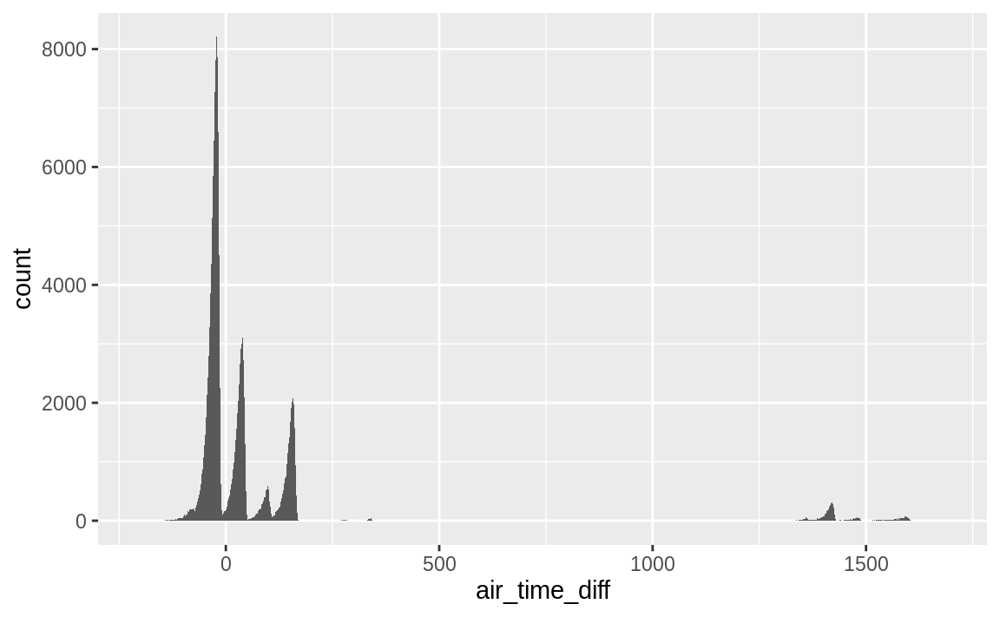
This is not the case.
While, the distribution of air_time_diff has modes at multiples of 60 as hypothesized,
it shows that there are many flights in which the difference between air time and local arrival and departure times is not divisible by 60.
Let’s also look at flights with Los Angeles as a destination. The discrepancy should be 180 minutes.
ggplot(filter(flights_airtime, dest == "LAX"), aes(x = air_time_diff)) +
geom_histogram(binwidth = 1)
#> Warning: Removed 148 rows containing non-finite values (stat_bin).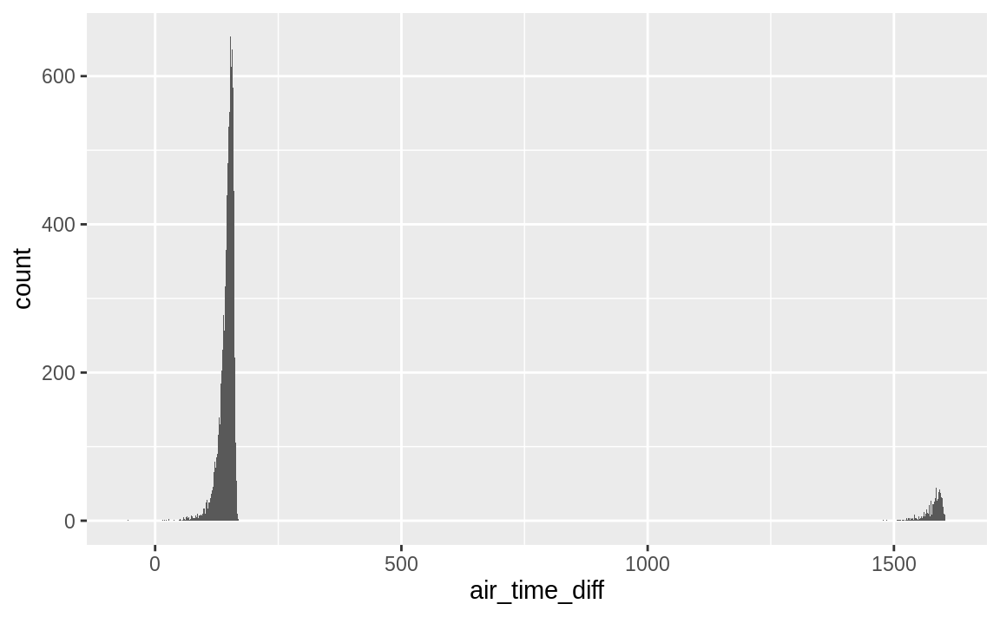
To fix these time-zone issues, I would want to convert all the times to a date-time to handle overnight flights, and from local time to a common time zone, most likely UTC, to handle flights crossing time-zones.
The tzone column of nycflights13::airports gives the time-zone of each airport.
See the “Dates and Times” for an introduction on working with date and time data.
But that still leaves the other differences unexplained.
So what else might be going on?
There seem to be too many problems for this to be data entry problems, so I’m probably missing something.
So, I’ll reread the documentation to make sure that I understand the definitions of arr_time, dep_time, and
air_time.
The documentation contains a link to the source of the flights data, https://www.transtats.bts.gov/DL_SelectFields.asp?Table_ID=236.
This documentation shows that the flights data does not contain the variables TaxiIn, TaxiOff, WheelsIn, and WheelsOff.
It appears that the air_time variable refers to flight time, which is defined as the time between wheels-off (take-off) and wheels-in (landing).
But the flight time does not include time spent on the runway taxiing to and from gates.
With this new understanding of the data, I now know that the relationship between air_time, arr_time, and dep_time is air_time <= arr_time - dep_time, supposing that the time zones of arr_time and dep_time are in the same time zone.
Exercise 5.5.3
Compare dep_time, sched_dep_time, and dep_delay. How would you expect those three numbers to be related?
I would expect the departure delay (dep_delay) to be equal to the difference between scheduled departure time (sched_dep_time), and actual departure time (dep_time),
dep_time - sched_dep_time = dep_delay.
As with the previous question, the first step is to convert all times to the
number of minutes since midnight.
The column, dep_delay_diff will the difference between dep_delay and
departure delay calculated from the scheduled and actual departure times.
flights_deptime <-
mutate(flights,
dep_time_min = (dep_time %/% 100 * 60 + dep_time %% 100) %% 1440,
sched_dep_time_min = (sched_dep_time %/% 100 * 60 +
sched_dep_time %% 100) %% 1440,
dep_delay_diff = dep_delay - dep_time_min + sched_dep_time_min
)Does dep_delay_diff equal zero for all rows?
filter(flights_deptime, dep_delay_diff != 0)
#> # A tibble: 1,236 x 22
#> year month day dep_time sched_dep_time dep_delay arr_time
#> <int> <int> <int> <int> <int> <dbl> <int>
#> 1 2013 1 1 848 1835 853 1001
#> 2 2013 1 2 42 2359 43 518
#> 3 2013 1 2 126 2250 156 233
#> 4 2013 1 3 32 2359 33 504
#> 5 2013 1 3 50 2145 185 203
#> 6 2013 1 3 235 2359 156 700
#> # … with 1,230 more rows, and 15 more variables: sched_arr_time <int>,
#> # arr_delay <dbl>, carrier <chr>, flight <int>, tailnum <chr>,
#> # origin <chr>, dest <chr>, air_time <dbl>, distance <dbl>, hour <dbl>,
#> # minute <dbl>, time_hour <dttm>, dep_time_min <dbl>,
#> # sched_dep_time_min <dbl>, dep_delay_diff <dbl>No. Unlike the last question, time zones are not an issue since we are only considering departure times.2 However, the discrepancies could be because a flight was scheduled to depart before midnight, but was delayed after midnight. All of these discrepancies are exactly equal to 1440 (24 hours), and the flights with these discrepancies were scheduled to depart later in the day.
ggplot(
filter(flights_deptime, dep_delay_diff > 0),
aes(y = sched_dep_time_min, x = dep_delay_diff)
) +
geom_point()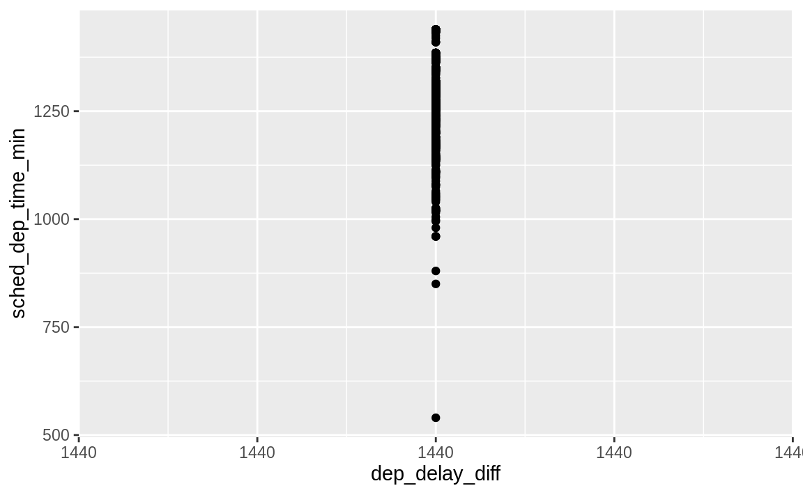 Thus the only cases in which the departure delay is not equal to the difference in scheduled departure and actual departure times is due to a quirk in how these columns were stored.
Exercise 5.5.4
Find the 10 most delayed flights using a ranking function.
How do you want to handle ties?
Carefully read the documentation for min_rank().
The dplyr package provides multiple functions for ranking, which differ in how they handle tied values: row_number(), min_rank(), dense_rank().
To see how they work, let’s create a data frame with duplicate values in a vector and see how ranking functions handle ties.
rankme <- mutate(rankme,
x_row_number = row_number(x),
x_min_rank = min_rank(x),
x_dense_rank = dense_rank(x)
)
arrange(rankme, x)
#> # A tibble: 5 x 4
#> x x_row_number x_min_rank x_dense_rank
#> <dbl> <int> <int> <int>
#> 1 1 1 1 1
#> 2 5 2 2 2
#> 3 5 3 2 2
#> 4 5 4 2 2
#> 5 10 5 5 3The function row_number() assigns each element a unique value.
The result is equivalent to the index (or row) number of each element after sorting the vector, hence its name.
Themin_rank() and dense_rank() assign tied values the same rank, but differ in how they assign values to the next rank.
For each set of tied values the min_rank() function assigns a rank equal to the number of values less than that tied value plus one.
In contrast, the dense_rank() function assigns a rank equal to the number of distinct values less than that tied value plus one.
To see the difference between dense_rank() and min_rank() compare the value of rankme$x_min_rank and rankme$x_dense_rank for x = 10.
If I had to choose one for presenting rankings to someone else, I would use min_rank() since its results correspond to the most common usage of rankings in sports or other competitions.
In the code below, I use all three functions, but since there are no ties in the top 10 flights,
the results don’t differ.
flights_delayed <- mutate(flights,
dep_delay_min_rank = min_rank(desc(dep_delay)),
dep_delay_row_number = row_number(desc(dep_delay)),
dep_delay_dense_rank = dense_rank(desc(dep_delay))
)
flights_delayed <- filter(
flights_delayed,
!(dep_delay_min_rank > 10 | dep_delay_row_number > 10 |
dep_delay_dense_rank > 10)
)
flights_delayed <- arrange(flights_delayed, dep_delay_min_rank)
print(select(
flights_delayed, month, day, carrier, flight, dep_delay,
dep_delay_min_rank, dep_delay_row_number, dep_delay_dense_rank
),
n = Inf
)
#> # A tibble: 10 x 8
#> month day carrier flight dep_delay dep_delay_min_r… dep_delay_row_n…
#> <int> <int> <chr> <int> <dbl> <int> <int>
#> 1 1 9 HA 51 1301 1 1
#> 2 6 15 MQ 3535 1137 2 2
#> 3 1 10 MQ 3695 1126 3 3
#> 4 9 20 AA 177 1014 4 4
#> 5 7 22 MQ 3075 1005 5 5
#> 6 4 10 DL 2391 960 6 6
#> 7 3 17 DL 2119 911 7 7
#> 8 6 27 DL 2007 899 8 8
#> 9 7 22 DL 2047 898 9 9
#> 10 12 5 AA 172 896 10 10
#> # … with 1 more variable: dep_delay_dense_rank <int>In addition to the functions covered here, the rank() function provides several more ways of ranking elements.
Exercise 5.5.5
What does 1:3 + 1:10 return? Why?
The code given in the question returns the following.
1:3 + 1:10
#> Warning in 1:3 + 1:10: longer object length is not a multiple of shorter
#> object length
#> [1] 2 4 6 5 7 9 8 10 12 11This is equivalent to the following.
c(1 + 1, 2 + 2, 3 + 3, 1 + 4, 2 + 5, 3 + 6, 1 + 7, 2 + 8, 3 + 9, 1 + 10)
#> [1] 2 4 6 5 7 9 8 10 12 11When adding two vectors recycles the shorter vector’s values to get vectors of the same length.
The code also produces a warning that the shorter vector is not a multiple of the longer vector. A warning is provided since often, but not always, this indicates a bug in the code.
Exercise 5.5.6
What trigonometric functions does R provide?
All trigonometric functions are all described in a single help page, named Trig.
You can open the documentation for these functions with ?Trig or by using ? with any of the following functions, for example:?sin.
R provides functions for the three primary trigonometric functions: sine (sin())), cosine (cos()), and tangent (tan()).
The input angles to all these functions are in radians.
x <- seq(-3, 7, by = 1 / 2)
sin(pi * x)
#> [1] -3.67e-16 -1.00e+00 2.45e-16 1.00e+00 -1.22e-16 -1.00e+00 0.00e+00
#> [8] 1.00e+00 1.22e-16 -1.00e+00 -2.45e-16 1.00e+00 3.67e-16 -1.00e+00
#> [15] -4.90e-16 1.00e+00 6.12e-16 -1.00e+00 -7.35e-16 1.00e+00 8.57e-16
cos(pi * x)
#> [1] -1.00e+00 3.06e-16 1.00e+00 -1.84e-16 -1.00e+00 6.12e-17 1.00e+00
#> [8] 6.12e-17 -1.00e+00 -1.84e-16 1.00e+00 3.06e-16 -1.00e+00 -4.29e-16
#> [15] 1.00e+00 5.51e-16 -1.00e+00 -2.45e-15 1.00e+00 -9.80e-16 -1.00e+00
tan(pi * x)
#> [1] 3.67e-16 -3.27e+15 2.45e-16 -5.44e+15 1.22e-16 -1.63e+16 0.00e+00
#> [8] 1.63e+16 -1.22e-16 5.44e+15 -2.45e-16 3.27e+15 -3.67e-16 2.33e+15
#> [15] -4.90e-16 1.81e+15 -6.12e-16 4.08e+14 -7.35e-16 -1.02e+15 -8.57e-16In the previous code, I used the variable pi.
R provide the variable pi which is set to the value of the mathematical constant \(\pi\).3
Although R provides the pi variable, there is nothing preventing a user from changing its value
For example, I could redefine pi to 3.14 or
any other value.
For that reason, if you are using the builtin pi variable in computations and are paranoid, you may want to always reference it as base::pi.
In the previous code block, since the angles were in radians, I wrote them as \(\pi\) times some number.
Since it is often easier to write radians multiple of \(\pi\), R provides some convenience functions that do that.
The function sinpi(x), is equivalent to sin(pi * x).
The functions cospi() and tanpi() are similarly defined for the sin and tan functions, respectively.
sinpi(x)
#> [1] 0 -1 0 1 0 -1 0 1 0 -1 0 1 0 -1 0 1 0 -1 0 1 0
cospi(x)
#> [1] -1 0 1 0 -1 0 1 0 -1 0 1 0 -1 0 1 0 -1 0 1 0 -1
tanpi(x)
#> Warning in tanpi(x): NaNs produced
#> [1] 0 NaN 0 NaN 0 NaN 0 NaN 0 NaN 0 NaN 0 NaN 0 NaN 0
#> [18] NaN 0 NaN 0R provides the function arc-cosine (acos()), arc-sine (asin()), and arc-tangent (atan()).
x <- seq(-1, 1, by = 1 / 4)
acos(x)
#> [1] 3.142 2.419 2.094 1.823 1.571 1.318 1.047 0.723 0.000
asin(x)
#> [1] -1.571 -0.848 -0.524 -0.253 0.000 0.253 0.524 0.848 1.571
atan(x)
#> [1] -0.785 -0.644 -0.464 -0.245 0.000 0.245 0.464 0.644 0.785Finally, R provides the function atan2().
Calling atan2(y, x) returns the angle between the x-axis and the vector from (0,0) to (x, y).
5.6 Grouped summaries with summarise()
Exercise 5.6.1
Brainstorm at least 5 different ways to assess the typical delay characteristics of a group of flights. Consider the following scenarios:
- A flight is 15 minutes early 50% of the time, and 15 minutes late 50% of the time.
- A flight is always 10 minutes late.
- A flight is 30 minutes early 50% of the time, and 30 minutes late 50% of the time.
- 99% of the time a flight is on time. 1% of the time it’s 2 hours late.
Which is more important: arrival delay or departure delay?
What this question gets at is a fundamental question of data analysis: the cost function. As analysts, the reason we are interested in flight delay because it is costly to passengers. But it is worth thinking carefully about how it is costly and use that information in ranking and measuring these scenarios.
In many scenarios, arrival delay is more important.
In most cases, being arriving late is more costly to the passenger since it could disrupt the next stages of their travel, such as connecting flights or scheduled meetings.
If a departure is delayed without affecting the arrival time, this delay will not have those affects plans nor does it affect the total time spent traveling.
This delay could be beneficial, if less time is spent in the cramped confines of the airplane itself, or a negative, if that delayed time is still spent in the cramped confines of the airplane on the runway.
Variation in arrival time is worse than consistency. If a flight is always 30 minutes late and that delay is known, then it is as if the arrival time is that delayed time. The traveler could easily plan for this. But higher variation in flight times makes it harder to plan.
Exercise 5.6.2
Come up with another approach that will give you the same output as not_cancelled %>% count(dest) and not_cancelled %>% count(tailnum, wt = distance) (without using count()).
The first expression is the following.
not_cancelled %>%
count(dest)
#> # A tibble: 104 x 2
#> dest n
#> <chr> <int>
#> 1 ABQ 254
#> 2 ACK 264
#> 3 ALB 418
#> 4 ANC 8
#> 5 ATL 16837
#> 6 AUS 2411
#> # … with 98 more rowsThe count() function counts the number of instances within each group of variables.
Instead of using the count() function,we can combine the group_by() and summarise() verbs.
not_cancelled %>%
group_by(dest) %>%
summarise(n = length(dest))
#> # A tibble: 104 x 2
#> dest n
#> <chr> <int>
#> 1 ABQ 254
#> 2 ACK 264
#> 3 ALB 418
#> 4 ANC 8
#> 5 ATL 16837
#> 6 AUS 2411
#> # … with 98 more rowsAn alternative method for getting the number of observations in a data frame is the function n().
not_cancelled %>%
group_by(dest) %>%
summarise(n = n())
#> # A tibble: 104 x 2
#> dest n
#> <chr> <int>
#> 1 ABQ 254
#> 2 ACK 264
#> 3 ALB 418
#> 4 ANC 8
#> 5 ATL 16837
#> 6 AUS 2411
#> # … with 98 more rowsAnother alternative to count() is to use the combination of the group_by() and tally() verbs.
In fact, count() is effectively a short-cut for group_by() followed by tally().
not_cancelled %>%
group_by(tailnum) %>%
tally()
#> # A tibble: 4,037 x 2
#> tailnum n
#> <chr> <int>
#> 1 D942DN 4
#> 2 N0EGMQ 352
#> 3 N10156 145
#> 4 N102UW 48
#> 5 N103US 46
#> 6 N104UW 46
#> # … with 4,031 more rowsThe second expression also uses the count() function, but adds a wt argument.
not_cancelled %>%
count(tailnum, wt = distance)
#> # A tibble: 4,037 x 2
#> tailnum n
#> <chr> <dbl>
#> 1 D942DN 3418
#> 2 N0EGMQ 239143
#> 3 N10156 109664
#> 4 N102UW 25722
#> 5 N103US 24619
#> 6 N104UW 24616
#> # … with 4,031 more rowsAs before, we can replicate count() by combining the group_by() and summarise() verbs.
But this time instead of using length(), we will use sum() with the weighting variable.
not_cancelled %>%
group_by(tailnum) %>%
summarise(n = sum(distance))
#> # A tibble: 4,037 x 2
#> tailnum n
#> <chr> <dbl>
#> 1 D942DN 3418
#> 2 N0EGMQ 239143
#> 3 N10156 109664
#> 4 N102UW 25722
#> 5 N103US 24619
#> 6 N104UW 24616
#> # … with 4,031 more rowsLike the previous example, we can also use the combination group_by() and tally().
Any arguments to tally() are summed.
Exercise 5.6.3
Our definition of cancelled flights (is.na(dep_delay) | is.na(arr_delay)) is slightly suboptimal.
Why?
Which is the most important column?
If a flight never departs, then it won’t arrive.
A flight could also depart and not arrive if it crashes, or if it is redirected and lands in an airport other than its intended destination.
So the most important column is arr_delay, which indicates the amount of delay in arrival.
filter(flights, !is.na(dep_delay), is.na(arr_delay)) %>%
select(dep_time, arr_time, sched_arr_time, dep_delay, arr_delay)
#> # A tibble: 1,175 x 5
#> dep_time arr_time sched_arr_time dep_delay arr_delay
#> <int> <int> <int> <dbl> <dbl>
#> 1 1525 1934 1805 -5 NA
#> 2 1528 2002 1647 29 NA
#> 3 1740 2158 2020 -5 NA
#> 4 1807 2251 2103 29 NA
#> 5 1939 29 2151 59 NA
#> 6 1952 2358 2207 22 NA
#> # … with 1,169 more rowsOkay, I’m not sure what’s going on in this data. dep_time can be non-missing and arr_delay missing but arr_time not missing.
They may be combining different flights?
Exercise 5.6.4
Look at the number of cancelled flights per day. Is there a pattern? Is the proportion of cancelled flights related to the average delay?
One pattern in cancelled flights per day is that the number of cancelled flights increases with the total number of flights per day. The proportion of cancelled flights increases with the average delay of flights.
To answer these questions, use definition of cancelled used in the
chapter Section 5.6.3 and the
relationship !(is.na(arr_delay) & is.na(dep_delay)) is equal to
!is.na(arr_delay) | !is.na(dep_delay) by De Morgan’s law.
The first part of the question asks for any pattern in the number of cancelled flights per day. I’ll look at the relationship between the number of cancelled flights per day and the total number of flights in a day. There should be an increasing relationship for two reasons. First, if all flights are equally likely to be cancelled, then days with more flights should have a higher number of cancellations. Second, it is likely that days with more flights would have a higher probability of cancellations because congestion itself can cause delays and any delay would affect more flights, and large delays can lead to cancellations.
cancelled_per_day <-
flights %>%
mutate(cancelled = (is.na(arr_delay) | is.na(dep_delay))) %>%
group_by(year, month, day) %>%
summarise(
cancelled_num = sum(cancelled),
flights_num = n(),
)Plotting flights_num against cancelled_num shows that the number of flights
cancelled increases with the total number of flights.
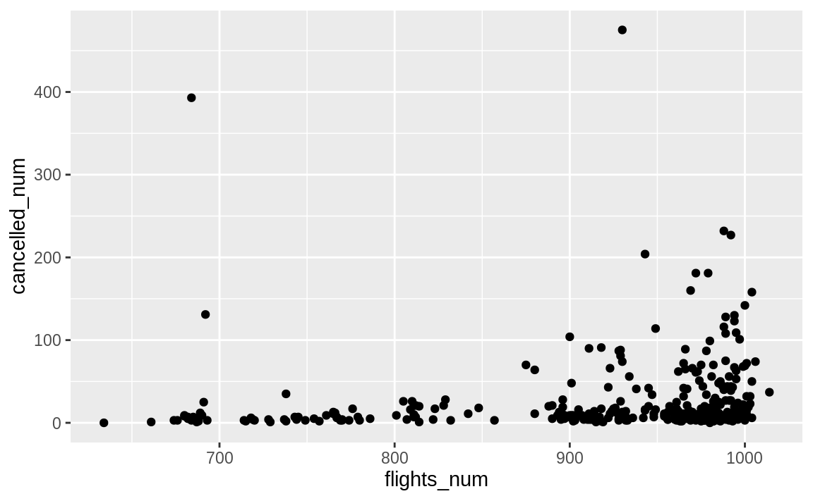
The second part of the question asks whether there is a relationship between the proportion of flights cancelled and the average departure delay. I implied this in my answer to the first part of the question, when I noted that increasing delays could result in increased cancellations. The question does not specify which delay, so I will show the relationship for both.
cancelled_and_delays <-
flights %>%
mutate(cancelled = (is.na(arr_delay) | is.na(dep_delay))) %>%
group_by(year, month, day) %>%
summarise(
cancelled_prop = mean(cancelled),
avg_dep_delay = mean(dep_delay, na.rm = TRUE),
avg_arr_delay = mean(arr_delay, na.rm = TRUE)
) %>%
ungroup()There is a strong increasing relationship between both average departure delay and
and average arrival delay and the proportion of cancelled flights.
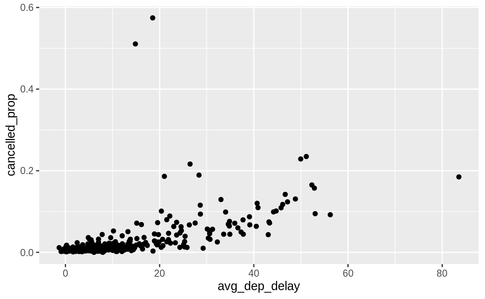
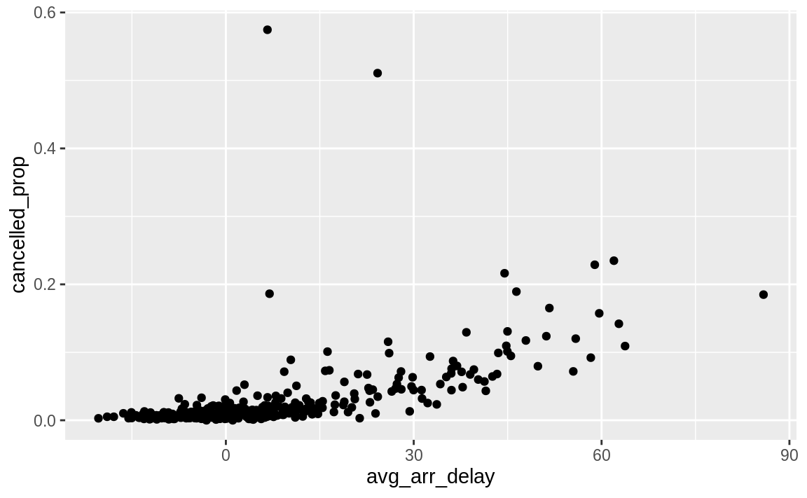
Exercise 5.6.5
Which carrier has the worst delays?
Challenge: can you disentangle the effects of bad airports vs. bad carriers?
Why/why not?
(Hint: think about flights %>% group_by(carrier, dest) %>% summarise(n()))
flights %>%
group_by(carrier) %>%
summarise(arr_delay = mean(arr_delay, na.rm = TRUE)) %>%
arrange(desc(arr_delay))
#> # A tibble: 16 x 2
#> carrier arr_delay
#> <chr> <dbl>
#> 1 F9 21.9
#> 2 FL 20.1
#> 3 EV 15.8
#> 4 YV 15.6
#> 5 OO 11.9
#> 6 MQ 10.8
#> # … with 10 more rowsWhat airline corresponds to the "F9" carrier code?
filter(airlines, carrier == "F9")
#> # A tibble: 1 x 2
#> carrier name
#> <chr> <chr>
#> 1 F9 Frontier Airlines Inc.You can get part of the way to disentangling the effects of airports versus bad carriers by comparing the average delay of each carrier to the average delay of flights within a route (flights from the same origin to the same destination). Comparing delays between carriers and within each route disentangles the effect of carriers and airports. A better analysis would compare the average delay of a carrier’s flights to the average delay of all other carrier’s flights within a route.
flights %>%
filter(!is.na(arr_delay)) %>%
# Total delay by carrier within each origin, dest
group_by(origin, dest, carrier) %>%
summarise(
arr_delay = sum(arr_delay),
flights = n()
) %>%
# Total delay within each origin dest
group_by(origin, dest) %>%
mutate(
arr_delay_total = sum(arr_delay),
flights_total = sum(flights)
) %>%
# average delay of each carrier - average delay of other carriers
ungroup() %>%
mutate(
arr_delay_others = (arr_delay_total - arr_delay) /
(flights_total - flights),
arr_delay_mean = arr_delay / flights,
arr_delay_diff = arr_delay_mean - arr_delay_others
) %>%
# remove NaN values (when there is only one carrier)
filter(is.finite(arr_delay_diff)) %>%
# average over all airports it flies to
group_by(carrier) %>%
summarise(arr_delay_diff = mean(arr_delay_diff)) %>%
arrange(desc(arr_delay_diff))
#> # A tibble: 15 x 2
#> carrier arr_delay_diff
#> <chr> <dbl>
#> 1 OO 27.3
#> 2 F9 17.3
#> 3 EV 11.0
#> 4 B6 6.41
#> 5 FL 2.57
#> 6 VX -0.202
#> # … with 9 more rowsThere are more sophisticated ways to do this analysis, however comparing the delay of flights within each route goes a long ways toward disentangling airport and carrier effects. To see a more complete example of this analysis, see this FiveThirtyEight piece.
Exercise 5.6.6
What does the sort argument to count() do?
When might you use it?
The sort argument to count() sorts the results in order of n.
You could use this anytime you would run count() followed by arrange().
5.7 Grouped mutates (and filters)
Exercise 5.7.1
Refer back to the lists of useful mutate and filtering functions. Describe how each operation changes when you combine it with grouping.
Summary functions (mean()), offset functions (lead(), lag()), ranking functions (min_rank(), row_number()), operate within each group when used with group_by() in
mutate() or filter().
Arithmetic operators (+, -), logical operators (<, ==), modular arithmetic operators (%%, %/%), logarithmic functions (log) are not affected by group_by.
Summary functions like mean(), median(), sum(), std() and others covered
in the section Useful Summary Functions
calculate their values within each group when used with mutate() or filter() and group_by().
tibble(
x = 1:9,
group = rep(c("a", "b", "c"), each = 3)
) %>%
mutate(x_mean = mean(x)) %>%
group_by(group) %>%
mutate(x_mean_2 = mean(x))
#> # A tibble: 9 x 4
#> # Groups: group [3]
#> x group x_mean x_mean_2
#> <int> <chr> <dbl> <dbl>
#> 1 1 a 5 2
#> 2 2 a 5 2
#> 3 3 a 5 2
#> 4 4 b 5 5
#> 5 5 b 5 5
#> 6 6 b 5 5
#> # … with 3 more rowsArithmetic operators +, -, *, /, ^ are not affected by group_by().
tibble(
x = 1:9,
group = rep(c("a", "b", "c"), each = 3)
) %>%
mutate(y = x + 2) %>%
group_by(group) %>%
mutate(z = x + 2)
#> # A tibble: 9 x 4
#> # Groups: group [3]
#> x group y z
#> <int> <chr> <dbl> <dbl>
#> 1 1 a 3 3
#> 2 2 a 4 4
#> 3 3 a 5 5
#> 4 4 b 6 6
#> 5 5 b 7 7
#> 6 6 b 8 8
#> # … with 3 more rowsThe modular arithmetic operators %/% and %% are not affected by group_by()
tibble(
x = 1:9,
group = rep(c("a", "b", "c"), each = 3)
) %>%
mutate(y = x %% 2) %>%
group_by(group) %>%
mutate(z = x %% 2)
#> # A tibble: 9 x 4
#> # Groups: group [3]
#> x group y z
#> <int> <chr> <dbl> <dbl>
#> 1 1 a 1 1
#> 2 2 a 0 0
#> 3 3 a 1 1
#> 4 4 b 0 0
#> 5 5 b 1 1
#> 6 6 b 0 0
#> # … with 3 more rowsThe logarithmic functions log(), log2(), and log10() are not affected by
group_by().
tibble(
x = 1:9,
group = rep(c("a", "b", "c"), each = 3)
) %>%
mutate(y = log(x)) %>%
group_by(group) %>%
mutate(z = log(x))
#> # A tibble: 9 x 4
#> # Groups: group [3]
#> x group y z
#> <int> <chr> <dbl> <dbl>
#> 1 1 a 0 0
#> 2 2 a 0.693 0.693
#> 3 3 a 1.10 1.10
#> 4 4 b 1.39 1.39
#> 5 5 b 1.61 1.61
#> 6 6 b 1.79 1.79
#> # … with 3 more rowsThe offset functions lead() and lag() respect the groupings in group_by().
The functions lag() and lead() will only return values within each group.
tibble(
x = 1:9,
group = rep(c("a", "b", "c"), each = 3)
) %>%
group_by(group) %>%
mutate(
lag_x = lag(x),
lead_x = lead(x)
)
#> # A tibble: 9 x 4
#> # Groups: group [3]
#> x group lag_x lead_x
#> <int> <chr> <int> <int>
#> 1 1 a NA 2
#> 2 2 a 1 3
#> 3 3 a 2 NA
#> 4 4 b NA 5
#> 5 5 b 4 6
#> 6 6 b 5 NA
#> # … with 3 more rowsThe cumulative and rolling aggregate functions cumsum(), cumprod(), cummin(), cummax(), and cummean() calculate values within each group.
tibble(
x = 1:9,
group = rep(c("a", "b", "c"), each = 3)
) %>%
mutate(x_cumsum = cumsum(x)) %>%
group_by(group) %>%
mutate(x_cumsum_2 = cumsum(x))
#> # A tibble: 9 x 4
#> # Groups: group [3]
#> x group x_cumsum x_cumsum_2
#> <int> <chr> <int> <int>
#> 1 1 a 1 1
#> 2 2 a 3 3
#> 3 3 a 6 6
#> 4 4 b 10 4
#> 5 5 b 15 9
#> 6 6 b 21 15
#> # … with 3 more rowsLogical comparisons, <, <=, >, >=, !=, and == are not affected by group_by().
tibble(
x = 1:9,
y = 9:1,
group = rep(c("a", "b", "c"), each = 3)
) %>%
mutate(x_lte_y = x <= y) %>%
group_by(group) %>%
mutate(x_lte_y_2 = x <= y)
#> # A tibble: 9 x 5
#> # Groups: group [3]
#> x y group x_lte_y x_lte_y_2
#> <int> <int> <chr> <lgl> <lgl>
#> 1 1 9 a TRUE TRUE
#> 2 2 8 a TRUE TRUE
#> 3 3 7 a TRUE TRUE
#> 4 4 6 b TRUE TRUE
#> 5 5 5 b TRUE TRUE
#> 6 6 4 b FALSE FALSE
#> # … with 3 more rowsRanking functions like min_rank() work within each group when used with group_by().
tibble(
x = 1:9,
group = rep(c("a", "b", "c"), each = 3)
) %>%
mutate(rnk = min_rank(x)) %>%
group_by(group) %>%
mutate(rnk2 = min_rank(x))
#> # A tibble: 9 x 4
#> # Groups: group [3]
#> x group rnk rnk2
#> <int> <chr> <int> <int>
#> 1 1 a 1 1
#> 2 2 a 2 2
#> 3 3 a 3 3
#> 4 4 b 4 1
#> 5 5 b 5 2
#> 6 6 b 6 3
#> # … with 3 more rowsThough not asked in the question, note that arrange() ignores groups when sorting values.
tibble(
x = runif(9),
group = rep(c("a", "b", "c"), each = 3)
) %>%
group_by(group) %>%
arrange(x)
#> # A tibble: 9 x 2
#> # Groups: group [3]
#> x group
#> <dbl> <chr>
#> 1 0.00740 b
#> 2 0.0808 a
#> 3 0.157 b
#> 4 0.290 c
#> 5 0.466 b
#> 6 0.498 c
#> # … with 3 more rowsHowever, the order of values from arrange() can interact with groups when
used with functions that rely on the ordering of elements, such as lead(), lag(),
or cumsum().
tibble(
group = rep(c("a", "b", "c"), each = 3),
x = runif(9)
) %>%
group_by(group) %>%
arrange(x) %>%
mutate(lag_x = lag(x))
#> # A tibble: 9 x 3
#> # Groups: group [3]
#> group x lag_x
#> <chr> <dbl> <dbl>
#> 1 b 0.0342 NA
#> 2 c 0.0637 NA
#> 3 a 0.175 NA
#> 4 c 0.196 0.0637
#> 5 b 0.320 0.0342
#> 6 b 0.402 0.320
#> # … with 3 more rowsExercise 5.7.2
Which plane (tailnum) has the worst on-time record?
The question does not define a way to measure on-time record, so I will consider two metrics:
- proportion of flights not delayed or cancelled, and
- mean arrival delay.
The first metric is the proportion of not-cancelled and on-time flights. I use the presence of an arrival time to mean that a flight was not cancelled. However, there are many planes that have never flown an on-time flight. Many of the planes that have the lowest proportion have only flown a small number of flights.
flights %>%
filter(!is.na(tailnum)) %>%
mutate(on_time = !is.na(arr_time) & (arr_delay <= 0)) %>%
group_by(tailnum) %>%
summarise(on_time = mean(on_time), n = n()) %>%
filter(min_rank(on_time) == 1)
#> # A tibble: 110 x 3
#> tailnum on_time n
#> <chr> <dbl> <int>
#> 1 N121DE 0 2
#> 2 N136DL 0 1
#> 3 N143DA 0 1
#> 4 N17627 0 2
#> 5 N240AT 0 5
#> 6 N26906 0 1
#> # … with 104 more rowsSo, I will remove planes that flew at least 20 flights. The choice of 20 was chosen because it round number near the first quartile of the number of flights by plane.45
The plane which few at least 20 flights with the worst on time record is:
flights %>%
filter(!is.na(tailnum)) %>%
mutate(on_time = !is.na(arr_time) & (arr_delay <= 0)) %>%
group_by(tailnum) %>%
summarise(on_time = mean(on_time), n = n()) %>%
filter(n >= 20) %>%
filter(min_rank(on_time) == 1)
#> # A tibble: 1 x 3
#> tailnum on_time n
#> <chr> <dbl> <int>
#> 1 N988AT 0.189 37The second metric is the mean minutes delayed. As with the previous metric, I will only consider planes which flew least 20 flights. A different plane has the worst on-time record when measured as average minutes delayed.
Exercise 5.7.3
What time of day should you fly if you want to avoid delays as much as possible?
Let’s group by the hour of the flight. The earlier the flight is scheduled, the lower its expected delay. This is intuitive as delays will affect later flights. Morning flights have fewer (if any) previous flights that can delay them.
Exercise 5.7.4
For each destination, compute the total minutes of delay. For each flight, compute the proportion of the total delay for its destination.
The key to answering this question is to only include delayed flights when calculating the total delay and proportion of delay.
flights %>%
filter(arr_delay > 0) %>%
group_by(dest) %>%
mutate(
arr_delay_total = sum(arr_delay),
arr_delay_prop = arr_delay / arr_delay_total
) %>%
select(
dest, month, day, dep_time, carrier, flight,
arr_delay, arr_delay_prop
) %>%
arrange(dest, desc(arr_delay_prop))
#> # A tibble: 133,004 x 8
#> # Groups: dest [103]
#> dest month day dep_time carrier flight arr_delay arr_delay_prop
#> <chr> <int> <int> <int> <chr> <int> <dbl> <dbl>
#> 1 ABQ 7 22 2145 B6 1505 153 0.0341
#> 2 ABQ 12 14 2223 B6 65 149 0.0332
#> 3 ABQ 10 15 2146 B6 65 138 0.0308
#> 4 ABQ 7 23 2206 B6 1505 137 0.0305
#> 5 ABQ 12 17 2220 B6 65 136 0.0303
#> 6 ABQ 7 10 2025 B6 1505 126 0.0281
#> # … with 1.33e+05 more rowsThere is some ambiguity in the meaning of flights in the question.
The first example defined a flight as a row in the flights table, a particular trip by aircraft from a particular
However, flight could also refer to the flight number, which is the code a carrier uses for an airline service of a route.
For example, AA1 is the flight number of the 09:00 American Airlines flight between JFK and LAX.
The flight number is contained flights$flight, though what is called a “flight” combination of the flights$carrier and flights$flight.
flights %>%
filter(arr_delay > 0) %>%
group_by(dest, origin, carrier, flight) %>%
summarise(arr_delay = sum(arr_delay)) %>%
group_by(dest) %>%
mutate(
arr_delay_prop = arr_delay / sum(arr_delay)
) %>%
arrange(dest, desc(arr_delay_prop)) %>%
select(carrier, flight, origin, dest, arr_delay_prop)
#> # A tibble: 8,834 x 5
#> # Groups: dest [103]
#> carrier flight origin dest arr_delay_prop
#> <chr> <int> <chr> <chr> <dbl>
#> 1 B6 1505 JFK ABQ 0.567
#> 2 B6 65 JFK ABQ 0.433
#> 3 B6 1191 JFK ACK 0.475
#> 4 B6 1491 JFK ACK 0.414
#> 5 B6 1291 JFK ACK 0.0898
#> 6 B6 1195 JFK ACK 0.0208
#> # … with 8,828 more rowsExercise 5.7.5
Delays are typically temporally correlated: even once the problem that caused the initial delay has been resolved, later flights are delayed to allow earlier flights to leave. Using lag() explore how the delay of a flight is related to the delay of the immediately preceding flight.
This calculates the departure delay of the preceding flight from the same airport.
lagged_delays <- flights %>%
arrange(origin, month, day, dep_time) %>%
group_by(origin) %>%
mutate(dep_delay_lag = lag(dep_delay)) %>%
filter(!is.na(dep_delay), !is.na(dep_delay_lag))This plots the relationship between the mean delay of a flight for all values of the previous flight. For delays less than two hours, the relationship between the delay of the preceding flight and the current flight is nearly a line. After that the relationship becomes more variable, as long-delayed flights are interspersed with flights leaving on-time. After about 8-hours, a delayed flight is likely to be followed by a flight leaving on time.
lagged_delays %>%
group_by(dep_delay_lag) %>%
summarise(dep_delay_mean = mean(dep_delay)) %>%
ggplot(aes(y = dep_delay_mean, x = dep_delay_lag)) +
geom_point() +
scale_x_continuous(breaks = seq(0, 1500, by = 120)) +
labs(y = "Departure Delay", x = "Previous Departure Delay")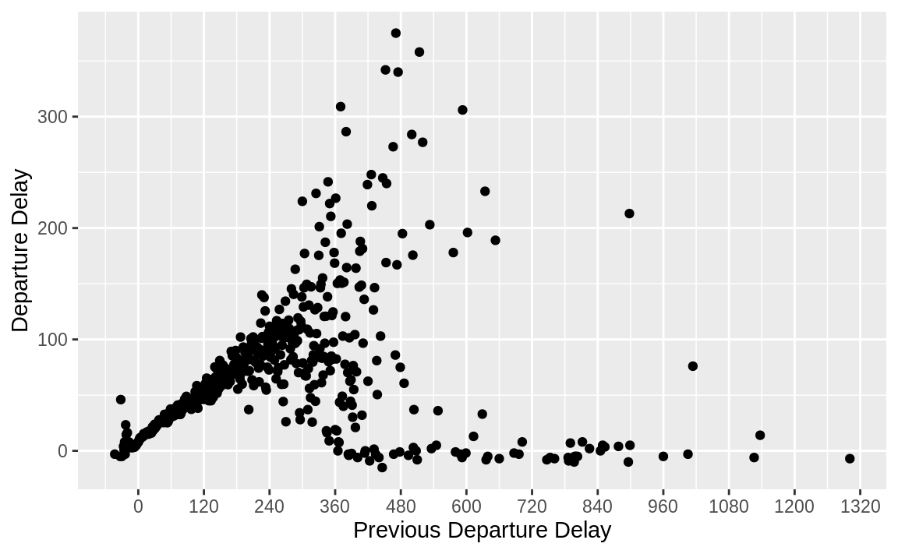
The overall relationship looks similar in all three origin airports.
lagged_delays %>%
group_by(origin, dep_delay_lag) %>%
summarise(dep_delay_mean = mean(dep_delay)) %>%
ggplot(aes(y = dep_delay_mean, x = dep_delay_lag)) +
geom_point() +
facet_wrap(~origin, ncol = 1) +
labs(y = "Departure Delay", x = "Previous Departure Delay")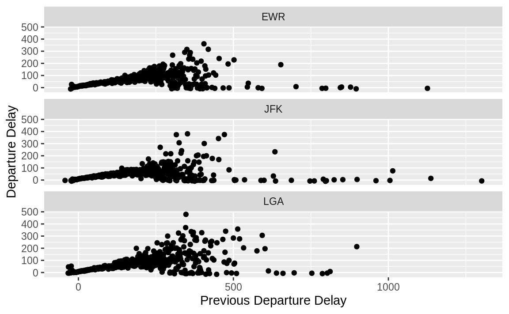
Exercise 5.7.6
Look at each destination. Can you find flights that are suspiciously fast? (i.e. flights that represent a potential data entry error). Compute the air time of a flight relative to the shortest flight to that destination. Which flights were most delayed in the air?
When calculating this answer we should only compare flights within the same (origin, destination) pair.
To find unusual observations, we need to first put them on the same scale. I will standardize values by subtracting the mean from each and then dividing each by the standard deviation. \[ \mathsf{standardized}(x) = \frac{x - \mathsf{mean}(x)}{\mathsf{sd}(x)} . \] A standardized variable is often called a \(z\)-score. The units of the standardized variable are standard deviations from the mean. This will put the flight times from different routes on the same scale. The larger the magnitude of the standardized variable for an observation, the more unusual the observation is. Flights with negative values of the standardized variable are faster than the mean flight for that route, while those with positive values are slower than the mean flight for that route.
standardized_flights <- flights %>%
filter(!is.na(air_time)) %>%
group_by(dest, origin) %>%
mutate(
air_time_mean = mean(air_time),
air_time_sd = sd(air_time),
n = n()
) %>%
ungroup() %>%
mutate(air_time_standard = (air_time - air_time_mean) / (air_time_sd + 1))I add 1 to the denominator and numerator to avoid dividing by zero.
Note that the ungroup() here is not necessary. However, I will be using
this data frame later. Through experience, I have found that I have fewer bugs
when I keep a data frame grouped for only those verbs that need it.
If I did not ungroup() this data frame, the arrange() used later would
not work as expected. It is better to err on the side of using ungroup()
when unnecessary.
The distribution of the standardized air flights has long right tail.
ggplot(standardized_flights, aes(x = air_time_standard)) +
geom_density()
#> Warning: Removed 4 rows containing non-finite values (stat_density).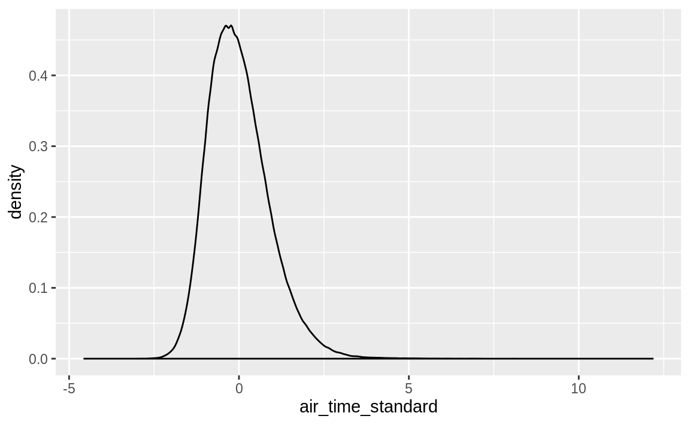
Unusually fast flights are those flights with the smallest standardized values.
standardized_flights %>%
arrange(air_time_standard) %>%
select(
carrier, flight, origin, dest, month, day,
air_time, air_time_mean, air_time_standard
) %>%
head(10) %>%
print(width = Inf)
#> # A tibble: 10 x 9
#> carrier flight origin dest month day air_time air_time_mean
#> <chr> <int> <chr> <chr> <int> <int> <dbl> <dbl>
#> 1 DL 1499 LGA ATL 5 25 65 114.
#> 2 EV 4667 EWR MSP 7 2 93 151.
#> 3 EV 4292 EWR GSP 5 13 55 93.2
#> 4 EV 3805 EWR BNA 3 23 70 115.
#> 5 EV 4687 EWR CVG 9 29 62 96.1
#> 6 B6 2002 JFK BUF 11 10 38 57.1
#> air_time_standard
#> <dbl>
#> 1 -4.56
#> 2 -4.46
#> 3 -4.20
#> 4 -3.73
#> 5 -3.60
#> 6 -3.38
#> # … with 4 more rowsI used width = Inf to ensure that all columns will be printed.
The fastest flight is DL1499 from LGA to ATL which departed on 2013-05-25 at 17:09. It has an air time of 65 minutes, compared to an average flight time of 114 minutes for its route. This is 4.6 standard deviations below the average flight on its route.
It is important to note that this does not necessarily imply that there was a data entry error. We should check these flights to see whether there was some reason for the difference. It may be that we are missing some piece of information that explains these unusual times.
A potential issue with the way that we standardized the flights is that the mean and standard deviation used to calculate are sensitive to outliers and outliers is what we are looking for. Instead of standardizing variables with the mean and variance, we could use the median as a measure of central tendency and the interquartile range (IQR) as a measure of spread. The median and IQR are more resistant to outliers than the mean and standard deviation. The following method uses the median and inter-quartile range, which are less sensitive to outliers.
standardized_flights2 <- flights %>%
filter(!is.na(air_time)) %>%
group_by(dest, origin) %>%
mutate(
air_time_median = median(air_time),
air_time_iqr = IQR(air_time),
n = n(),
air_time_standard = (air_time - air_time_median) / air_time_iqr
)The distribution of the standardized air flights using this new definition also has long right tail of slow flights.
ggplot(standardized_flights2, aes(x = air_time_standard)) +
geom_density()
#> Warning: Removed 4 rows containing non-finite values (stat_density).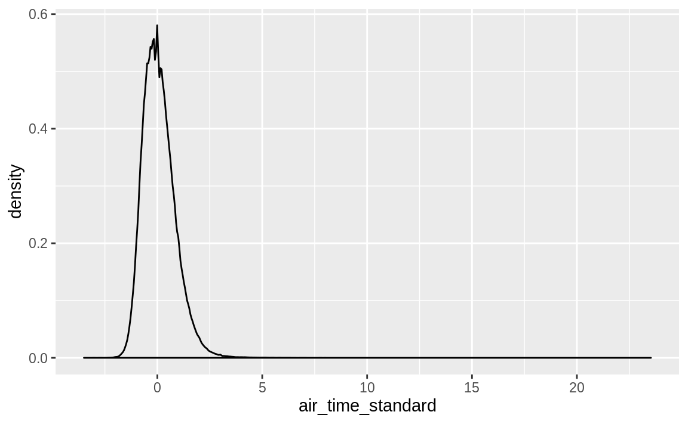
Unusually fast flights are those flights with the smallest standardized values.
standardized_flights2 %>%
arrange(air_time_standard) %>%
select(
carrier, flight, origin, dest, month, day, air_time,
air_time_median, air_time_standard
) %>%
head(10) %>%
print(width = Inf)
#> # A tibble: 10 x 9
#> # Groups: dest, origin [10]
#> carrier flight origin dest month day air_time air_time_median
#> <chr> <int> <chr> <chr> <int> <int> <dbl> <dbl>
#> 1 EV 4667 EWR MSP 7 2 93 149
#> 2 DL 1499 LGA ATL 5 25 65 112
#> 3 US 2132 LGA BOS 3 2 21 37
#> 4 B6 30 JFK ROC 3 25 35 51
#> 5 B6 2002 JFK BUF 11 10 38 57
#> 6 EV 4292 EWR GSP 5 13 55 92
#> air_time_standard
#> <dbl>
#> 1 -3.5
#> 2 -3.36
#> 3 -3.2
#> 4 -3.2
#> 5 -3.17
#> 6 -3.08
#> # … with 4 more rowsAll of these answers have relied only on using a distribution of comparable observations to find unusual observations.
In this case, the comparable observations were flights from the same origin to the same destination.
Apart from our knowledge that flights from the same origin to the same destination should have similar air times, we have not used any other domain-specific knowledge.
But we know much more about this problem.
The most obvious piece of knowledge we have is that we know that flights cannot travel back in time, so there should never be a flight with a negative airtime.
But we also know that aircraft have maximum speeds.
While different aircraft have different cruising speeds, commercial airliners
typically cruise at air speeds around 547–575 mph.
Calculating the ground speed of aircraft is complicated by the way in which winds, especially the influence of wind, especially jet streams, on the ground-speed of flights.
A strong tailwind can increase ground-speed of the aircraft by 200 mph.
Apart from the retired Concorde.
For example, in 2018, a transatlantic flight
traveled at 770 mph due to a strong jet stream tailwind.
This means that any flight traveling at speeds greater than 800 mph is implausible,
and it may be worth checking flights traveling at greater than 600 or 700 mph.
Ground speed could also be used to identify aircraft flying implausibly slow.
Joining flights data with the air craft type in the planes table and getting
information about typical or top speeds of those aircraft could provide a more
detailed way to identify implausibly fast or slow flights.
Additional data on high altitude wind speeds at the time of the flight would further help.
Knowing the substance of the data analysis at hand is one of the most important tools of a data scientist. The tools of statistics are a complement, not a substitute, for that knowledge.
With that in mind, Let’s plot the distribution of the ground speed of flights. The modal flight in this data has a ground speed of between 400 and 500 mph. The distribution of ground speeds has a large left tail of slower flights below 400 mph constituting the majority. There are very few flights with a ground speed over 500 mph.
flights %>%
mutate(mph = distance / (air_time / 60)) %>%
ggplot(aes(x = mph)) +
geom_histogram(binwidth = 10)
#> Warning: Removed 9430 rows containing non-finite values (stat_bin).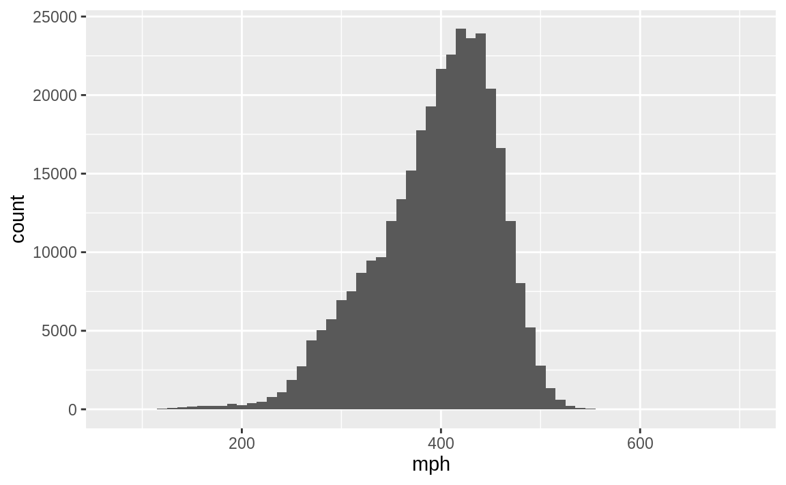
The fastest flight is the same one identified as the largest outlier earlier. Its ground speed was 703 mph. This is fast for a commercial jet, but not impossible.
flights %>%
mutate(mph = distance / (air_time / 60)) %>%
arrange(desc(mph)) %>%
select(mph, flight, carrier, flight, month, day, dep_time) %>%
head(5)
#> # A tibble: 5 x 6
#> mph flight carrier month day dep_time
#> <dbl> <int> <chr> <int> <int> <int>
#> 1 703. 1499 DL 5 25 1709
#> 2 650. 4667 EV 7 2 1558
#> 3 648 4292 EV 5 13 2040
#> 4 641. 3805 EV 3 23 1914
#> 5 591. 1902 DL 1 12 1559One explanation for unusually fast flights is that they are “making up time” in the air by flying faster. Commercial aircraft do not fly at their top speed since the airlines are also concerned about fuel consumption. But, if a flight is delayed on the ground, it may fly faster than usual in order to avoid a late arrival. So, I would expect that some of the unusually fast flights were delayed on departure.
flights %>%
mutate(mph = distance / (air_time / 60)) %>%
arrange(desc(mph)) %>%
select(
origin, dest, mph, year, month, day, dep_time, flight, carrier,
dep_delay, arr_delay
)
#> # A tibble: 336,776 x 11
#> origin dest mph year month day dep_time flight carrier dep_delay
#> <chr> <chr> <dbl> <int> <int> <int> <int> <int> <chr> <dbl>
#> 1 LGA ATL 703. 2013 5 25 1709 1499 DL 9
#> 2 EWR MSP 650. 2013 7 2 1558 4667 EV 45
#> 3 EWR GSP 648 2013 5 13 2040 4292 EV 15
#> 4 EWR BNA 641. 2013 3 23 1914 3805 EV 4
#> 5 LGA PBI 591. 2013 1 12 1559 1902 DL -1
#> 6 JFK SJU 564 2013 11 17 650 315 DL -5
#> # … with 3.368e+05 more rows, and 1 more variable: arr_delay <dbl>
head(5)
#> [1] 5Five of the top ten flights had departure delays, and three of those were able to make up that time in the air and arrive ahead of schedule.
Overall, there were a few flights that seemed unusually fast, but they all fall into the realm of plausibility and likely are not data entry problems. [Ed. Please correct me if I am missing something]
The second part of the question asks us to compare flights to the fastest flight
on a route to find the flights most delayed in the air. I will calculate the
amount a flight is delayed in air in two ways.
The first is the absolute delay, defined as the number of minutes longer than the fastest flight on that route,air_time - min(air_time).
The second is the relative delay, which is the percentage increase in air time relative to the time of the fastest flight
along that route, (air_time - min(air_time)) / min(air_time) * 100.
air_time_delayed <-
flights %>%
group_by(origin, dest) %>%
mutate(
air_time_min = min(air_time, na.rm = TRUE),
air_time_delay = air_time - air_time_min,
air_time_delay_pct = air_time_delay / air_time_min * 100
)The most delayed flight in air in minutes was DL841 from JFK to SFO which departed on 2013-07-28 at 17:27. It took 189 minutes longer than the flight with the shortest air time on its route.
air_time_delayed %>%
arrange(desc(air_time_delay)) %>%
select(
air_time_delay, carrier, flight,
origin, dest, year, month, day, dep_time,
air_time, air_time_min
) %>%
head() %>%
print(width = Inf)
#> # A tibble: 6 x 11
#> # Groups: origin, dest [5]
#> air_time_delay carrier flight origin dest year month day dep_time
#> <dbl> <chr> <int> <chr> <chr> <int> <int> <int> <int>
#> 1 189 DL 841 JFK SFO 2013 7 28 1727
#> 2 165 DL 426 JFK LAX 2013 11 22 1812
#> 3 163 AA 575 JFK EGE 2013 1 28 1806
#> 4 147 DL 17 JFK LAX 2013 7 10 1814
#> 5 145 UA 745 LGA DEN 2013 9 10 1513
#> 6 143 UA 587 EWR LAS 2013 11 22 2142
#> air_time air_time_min
#> <dbl> <dbl>
#> 1 490 301
#> 2 440 275
#> 3 382 219
#> 4 422 275
#> 5 331 186
#> 6 399 256The most delayed flight in air as a percentage of the fastest flight along that route was US2136 from LGA to BOS departing on 2013-06-17 at 16:52. It took 410% longer than the flight with the shortest air time on its route.
air_time_delayed %>%
arrange(desc(air_time_delay)) %>%
select(
air_time_delay_pct, carrier, flight,
origin, dest, year, month, day, dep_time,
air_time, air_time_min
) %>%
head() %>%
print(width = Inf)
#> # A tibble: 6 x 11
#> # Groups: origin, dest [5]
#> air_time_delay_pct carrier flight origin dest year month day dep_time
#> <dbl> <chr> <int> <chr> <chr> <int> <int> <int> <int>
#> 1 62.8 DL 841 JFK SFO 2013 7 28 1727
#> 2 60 DL 426 JFK LAX 2013 11 22 1812
#> 3 74.4 AA 575 JFK EGE 2013 1 28 1806
#> 4 53.5 DL 17 JFK LAX 2013 7 10 1814
#> 5 78.0 UA 745 LGA DEN 2013 9 10 1513
#> 6 55.9 UA 587 EWR LAS 2013 11 22 2142
#> air_time air_time_min
#> <dbl> <dbl>
#> 1 490 301
#> 2 440 275
#> 3 382 219
#> 4 422 275
#> 5 331 186
#> 6 399 256Exercise 5.7.7
Find all destinations that are flown by at least two carriers. Use that information to rank the carriers.
To restate this question, we are asked to rank airlines by the number of destinations that they fly to, considering only those airports that are flown to by two or more airlines. There are two steps to calculating this ranking. First, find all airports serviced by two or more carriers. Then, rank carriers by the number of those destinations that they service.
flights %>%
# find all airports with > 1 carrier
group_by(dest) %>%
mutate(n_carriers = n_distinct(carrier)) %>%
filter(n_carriers > 1) %>%
# rank carriers by numer of destinations
group_by(carrier) %>%
summarize(n_dest = n_distinct(dest)) %>%
arrange(desc(n_dest))
#> # A tibble: 16 x 2
#> carrier n_dest
#> <chr> <int>
#> 1 EV 51
#> 2 9E 48
#> 3 UA 42
#> 4 DL 39
#> 5 B6 35
#> 6 AA 19
#> # … with 10 more rowsThe carrier "EV" flies to the most destinations, considering only airports flown to by two or more carriers. What is airline does the "EV" carrier code correspond to?
filter(airlines, carrier == "EV")
#> # A tibble: 1 x 2
#> carrier name
#> <chr> <chr>
#> 1 EV ExpressJet Airlines Inc.Unless you know the airplane industry, it is likely that you don’t recognize ExpressJet; I certainly didn’t. It is a regional airline that partners with major airlines to fly from hubs (larger airports) to smaller airports. This means that many of the shorter flights of major carriers are operated by ExpressJet. This business model explains why ExpressJet services the most destinations.
Among the airlines that fly to only one destination from New York are Alaska Airlines and Hawaiian Airlines.
Exercise 5.7.8
For each plane, count the number of flights before the first delay of greater than 1 hour.
The question does not specify arrival or departure delay.
I consider dep_delay in this answer, though similar code could be used for arr_delay.
flights %>%
# sort in increasing order
select(tailnum, year, month, day, dep_delay) %>%
filter(!is.na(dep_delay)) %>%
arrange(tailnum, year, month, day) %>%
group_by(tailnum) %>%
# cumulative number of flights delayed over one hour
mutate(cumulative_hr_delays = cumsum(dep_delay > 60)) %>%
# count the number of flights == 0
summarise(total_flights = sum(cumulative_hr_delays < 1)) %>%
arrange(total_flights)
#> # A tibble: 4,037 x 2
#> tailnum total_flights
#> <chr> <int>
#> 1 D942DN 0
#> 2 N10575 0
#> 3 N11106 0
#> 4 N11109 0
#> 5 N11187 0
#> 6 N11199 0
#> # … with 4,031 more rowsThe exception is flights on the days on which daylight savings started (March 10) or ended (November 3). Since in the US, daylight savings goes into effect at 2 a.m., and generally flights are not scheduled to depart between midnight and 2 a.m., the only flights which would be scheduled to depart in Eastern Daylight Savings Time (Eastern Standard Time) time but departed in Eastern Standard Time (Eastern Daylight Savings Time), would have been scheduled before midnight, meaning they were delayed across days. If time zones seem annoying, it is not your imagination. They are.
I recommend this video, The Problem with Time & Timezones - Computerphile.↩Yes, technically,
base::piis an approximation of \(\pi\) to seven digits of precision. Don’t @ me.↩We could address this issue using a statistical model, but that is outside the scope of this text.↩
The
count()function is introduced in Chapter 5.6. It returns the count of rows by group. In this case, the number of rows inflightsfor eachtailnum. The data frame thatcount()returns has columns for the groups, and a columnn, which contains that count.↩